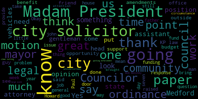

AI-generated transcript of City Council 02-28-23
English | español | português | 中国人 | kreyol ayisyen | tiếng việt | ខ្មែរ | русский | عربي | 한국인
Back to all transcripts
Heatmap of speakers
[Morell]: fifth regular meeting of the Medford City Council February 28 2023 is called to order Mr. Clerk, please call the roll. President seven present zero absent, please rise. Announcements, accolades, remembrances, reports, and records 23-045 offered by Councilor Caraviello. Be it resolved that the Medford City Council send its deepest and sincere condolences to the family of Paul Howard. Mr. Howard was the owner of the renowned Jim's Market on Fulton Street for over 35 years. Councilor Caraviello.
[Caraviello]: Thank you, Madam President. For those of you who don't know, Mr. Howard started Jim's Market up in the Fulton Heights, and Mr. Howard has probably put Fulton Heights on the map throughout the country. He's been on TV shows, and people drive all over for his famous b-boy. So, Mr. Howard, he was a good community person, and his children stayed on, keeping the store going. So, I just wanna, you know, uh, condolences to his family on his passing.
[Morell]: Thank you. Councilor Scarpelli?
[Scarpelli]: Thank you, Madam President. Thank you, Councilor Caraviello for bringing this up. Uh, Mr. Howard wasn't just a gentleman who who created an infamous breakfast sandwich. He's someone that fought for our country, that loved Medford, and someone that really cared about his community. Living up in the heights and working on the board of Little League, we'd find ourselves as parents preparing a field at 95 degrees, and without field, Mr. Howard would be walking toward you with two gallons of water just to make sure that we're hydrated. They'll show up one day and drop off a bucket of balls that people didn't collect and make sure the kids got back went back to the kids. I love the story back in the blizzard of 78, when no one can leave their houses, and you had elderly families that couldn't find. a gallon of milk or half a loaf of bread, and Mr. Howard decided to ration off everything in his corner store to make sure everybody lasted through that difficult time in 78. I send deep condolences to the Howard family. I know Mrs. Howard is represented by a name on the corner of Fulton Street. I ask the administration to, with respect, add Mr. Howard's name along with his wife in respect of that historical corner that I think everybody should drive by, walk by, ride your bike by, look up and say, wow, I wonder who that person was. And you can know about what it means to be a true community member and what it really means to be a Medford Mustang. Because again, I've said it too many times here, who's gonna take their place? People like Mr. Howard stepping, passing on, who's gonna take their place to pass on the legacies that great people from Metro made up. Thank you.
[Morell]: Would you like it to be an amendment, please can we please thank you. Thank you. Councilor Knight.
[Knight]: Madam President, thank you very much. I'd like to echo the sentiments of my fellow Councilors, Paul Howard was a great man, I someone that I had the pleasure of getting to know at a very young age picture Mr. Howard. 50 plus years old, playing full court basketball at Carr Park with, you know, 20, 25 kids between the ages of 15 and 25 years old and absolutely dominating. Paul was an amazing athlete. His accolades on the basketball court for Somerville High School back in the 50s and early 60s is something that I talked about very, very fondly to this day among my father and his friends. And whenever Paul Howard's name come up, They always speak of his work ethic and the type of gentleman that he was, just a kind man that went to work, put his head down and did the right thing. He's someone that's going to be sadly missed in this community, and I'm very lucky that I had the opportunity to call him a friend.
[Morell]: Thank you, Councilor Knight. So on the motion of Councilor Caraviello, as amended by Councilor Scarpelli, seconded by Vice President Bearsar, Mr. Clerk, please call the roll. Yes. Yes.
[Lemming]: Yes.
[Morell]: Yes. Yes. Yes. In the negative motion passes, please rise for a moment of silence.
[Caraviello]: Madam President. Motion for suspension to take papers 23063 and 23056. On the motion of Councilor Cabrera to take papers 23063 and 23056.
[Morell]: Seconded by Councilor Scarpelli. Mr. Clerk, please call the roll. Yes. Yes. Yes. Yes. Yes. So the firm is during the night of the motion passes. I'm sorry, it's 23 to 063 or 063 was the clerk has enough suspension. Oh, right. Okay. Let's take that. 23-06 offered by Councilor Caraviello and Councilor Knight, be it resolved that the Medford City Council send its deepest and sincere condolences to the family of former City Councilor Robert L. Maloney on his recent passing. Councilor Maloney served on this Council from 1976 to 2001 as a member of the City Council, as President of the City Council, and as Deputy Mayor under the Plan E form of government, his presence will be missed in our community. Be it for the resolve that the Council dedicate tonight's meeting in Councilor Maloney's memory. Councilor Caraviello.
[Caraviello]: Thank you, Madam President. For those who don't know, Bob Maloney, he was a longtime City Councilor. He has children in this community, holding several positions in the community. But Bob, Rob was a guy who served here every week, and he's pretty strong in his convictions of what he stood for and what he won. As you can see, he served as president and vice president, and he was deputy mayor, and he was here under the old BME form of government, where actually that's where the count really through the weight arounds. I'd like to say, I've known Bob for many years, both as a friend and he's a brother member of my Kiwanian club too. So I'd just like to echo to his children, who are the athletic director and as a policeman, our condolences and thank you for holding this meeting tonight.
[Knight]: Madam President, thank you very much. Again, Bob Maloney Sr. was a gentleman that I had the opportunity of developing a great friendship with. I remember fondly the summer of 2005 after the passing of Senator Shannon and I was working on the Callahan campaign for State Senate and Bob Maloney Sr. was in the office every single day making phone calls and we'd go out knocking on doors and he had such a way about him, you know, he was great. He'd walk up to the door, he'd knock knock on the door and he'd say, Hey, I'm Bob Maloney. I'm the city councilor from down here in this neighborhood. And this is the guy we're supporting for city council. So we're going to, for our state Senate. So we're going to put a sign on your front lawn and we're going to get you to vote for him. All right. Okay, Bob, no problem. And they'd walk away. The guy was amazing on the street. He was one of the best campaigners I've ever seen in my life. And he raised a great family of public servants that are following in his footsteps. To Gordon, to Sean and to Bobby, my deepest condolences. You're all great friends and it's very sad to lose a man of your father's stature, but he's in a better place now. And I thank the Lord and I thank you guys for your friendship and for the opportunity to have stood beside your father during a period of time where we were able to have a lot of fun.
[Morell]: Thank you, Councilman. Councilor Scarpelli.
[Scarpelli]: Thank you, Madam President. And I blame my passion and my outburst sometimes on Council Maloney because I learned from the best. He would wear his emotions on his sleeve and he wouldn't be afraid to say what he thought he needed to say for what was best for the city of Medford. And maybe from time to time, the rumors that he might have jumped over the rail a couple times. but he had so much passion to make sure that the city of Medford was represented in such a positive light. And he was a person that would take care and work for anyone in this community, whether it was in the Wellington area, West Medford, South Medford, even though he grew up, he was over at Charter Nav. he really fought for everybody. And, um, it's a sad day that Mr. Moody's passed. But I know that he's left a legacy with Gordon and Sean and Bobby. Um, three Children that following his footsteps and giving back to their communities and, um, someone I'm very proud to have known and learn from. So, um, condolences to his family. Thank you, Madam President.
[Morell]: Thank you, Mr. Kelly. So on the motion of Councilor Caraviello, seconded by Councilor Knight, Mr. Clerk, please call the roll. Yes. Yes. Yes. Yes. We do have one more paper under suspension, but so we have 22, sorry, 23-056 petition for a common bit. So 23-056 petition for a common bit letters license by V. Samanth Vong and Thaliphon, 9 West Green Street, apartment 2, Lynn, Massachusetts, 01902 for King Bobiti at 464B Salem Street, Metro Mass, 02155. I know we have the petitioner here. If you want to come up to the mic, and I'm going to pass it over to our licensing chair, Councilor Scarpelli.
[Scarpelli]: Thank you for being here. First, business, everything looks like it's in order. Personally, I'm going to be very upset because I'm going to be spending a lot of money. My daughter loves the establishment, so now that it's in our backyard, I think the family money will be spent at Boba Tea. So just take it easy on us, but- Thank you. No, I look, I see everything in order, Madam President, and I move approval.
[Morell]: Thank you, Councilor Scarpelli. Any further discussion from the council? Second. On the motion of Councilor Scarpelli, it's seconded by Councilor Caraviello. Mr. Clerk, please call the roll. Yes. Yes. Yes. Yes. Yes. Yes. Yes. Seven in the affirmative, zero in the negative, the motion passes. The license is approved. Thank you. Congratulations. All right. So while we're under suspension taking 23-025 offered by Councilor Scarpelli be it resolved the city council and buddy member of the city administration Neil Osborne and a representative from the Medford fire department to discuss issues and concerns dealing with fire trucks and human resource questions. Councilor Scarpelli.
[Scarpelli]: Thank you, Madam President. I know that I appreciate Chief being here this evening. I know that we just had a few concerns. One that I know that as we're looking at our budget coming forward and understanding that we might have some issues with the fleet and seeing what we need to do, we can do as a council to try to help move things along if we need to need to. to make sure that you get all the apparatus you need for the safety of your men and women. So that'll be the first thing. And then I know that there were some concerns about benefits for new hirees, that we can shed some light.
[Freedman]: Okay, the benefits for the new hires, that's human resources. So I'll have to have Mr. Osborne address you on that. I do know I have three members, two that were hired in February of 22 and the other one hired in September of 22. that there's some sort of issue with the healthcare and human resources takes care of that end of it. So you'd have to ask Mr. Rogers what's going on there.
[Scarpelli]: Someone's here tonight, so I appreciate that. So if you can shed some light on our fleet, that would be.
[Freedman]: Okay, so the fleet, I'll just give you a brief summary of what's going on with the fleet. Obviously, we have two new ladder trucks that we've experienced some warranty issues with them. I have negotiated with Seagrave to extend the warranty another year. They have been really good standing behind me with repairing it. The problem is, you know, the repairs sometimes take time. So luckily we have two spares, so I've been able to juggle the spares. And one of the aerials is in Jersey right now, getting everything finished up on it. The other one's currently in service, and then the other two spares are, one of them's operating, the other one's in the shop also. Okay, so as far as the pumps go, when trucks get to a certain age and a certain number of hours and mileage, they're at the end of their usable life. So we have two pumps that were purchased in 2000. So that's kind of self-explanatory, they're 23 years old. They got pushed into the front line because of a premature frame failure on engine six, which is a 2008 PS Sabre. So that was something nobody could really foresee. It just, you know, we had it in for some maintenance and, you know, we examined the frame and we discovered that the frame was, you know, unsafe. So we were forced to put it out of service. So what that did was it brought these spare apparatus to the frontline. And then we experienced a couple of, you know, major mechanical failures in those, which I was able to absorb in my budget it took up over half my maintenance budget but I was able to repair those and they're back from repairs and those are going to be run in the foreseeable future till we can get something new. As far as like what we're going to purchase when we're going to purchase it the mayor and I are working on that on a purchase plan to figure out what we can buy and how many and that's something that's like a in progress that I really can't tell you you know we're not there yet but we're working diligently to figure out how we can get out of this problem. The other issue that's come into play is, and it's part of the sort of a result of the pandemic and the supply chain interruption is these trucks to build them now, it's up to 820 days from the time you complete the order to the time the truck arrives. So that's a little over two years. And then if you add in the time it takes to put radios in them, tablets, letter them, train the personnel. You're talking two and a half years before you're gonna see them. And that keeps going up. Every time we wait, if we don't get it done, another month goes by, it's another month, and then we end up having to wait longer. So that's why we were forced to kind of repair these older trucks to kind of keep the fleet operational. And that's where we're at with the fleet.
[Scarpelli]: If you have any questions, I'll yeah, so I know that one of some of the residents are asking that why is there a Boston truck and I don't know if we said maybe there was a fire and they were covering and then someone said what happened with the Boston truck was.
[Freedman]: When we experienced the two major component failures on the other two trucks, I was forced to borrow a truck from Boston. And they were gracious enough to give it to us for a period of time. And they do that for other departments in the metro fire area. I have a good relationship with the chief and the mechanics in Boston, and they support us if I call them for something like that. As long as they have something available, they'll lend it with the idea that they may need it back. If I get that phone call, I have to give it back. So it saved us from browning anything out. We basically were running that Boston truck for a period of time.
[Scarpelli]: So this, I'll say it, Chief, this seems dire. This should have been something that this administration should have asked for two years ago. And this is something that is, do we have a representative from the administration?
[Morell]: We have Neil Osborne, but I'm not seeing anyone.
[Scarpelli]: Okay, so that's a problem. So I look at that because usually when you present a capital plan like this, it's in the capital projects. We haven't seen, have we got an update? So I know that, you know, I know that the mayor put out that the station, Main Street stations now going under this, that, and the other thing, and that's great, but these are the things that frighten me. This is great if we have a brand new fire station, but, you know, are we gonna be, you know, rent in a U-Haul truck and throwing some ladders on the top, because we don't have fire engines. So that's what I fear right now, because as you're saying, two and a half years away, and we're in discussions about ordering them, I think this council needs to play a bigger role in this, Chief. I think that we need to make a motion that we need to have an emergency meeting, as committee of the whole, with procurement office, with the mayor, And really, let's try to figure out a way to get this audit sooner than later. I mean, I don't, I know it's not It's not a popular thing, it's tough to be up there. I know it is, but from here, I know how dangerous your jobs are, and not to have the proper equipment that you need, whether it's turnout gear, whether it's fire trucks.
[Freedman]: I literally, just so I can stop you for a second. Maybe I wasn't clear. Okay, so when we, the mayor and I discussed this, It takes a period of time for manufacturers to quote that price, you know, the price of the apparatus and that lead time that I was just telling you about that constantly changes. And now they're only guaranteeing that for 30 days. So every time, if we go beyond the 30 days, it has to be recorded and then that takes time. So I recently, like two days ago, handed the mayor all the updated information on the price quote, the lead time. And we are in discussions, like I said, on figuring out how we're going to fund that. And that comes from her staff and her, not me. I just give her the information. you know, she has to make that commitment where that's gonna be done. And then once I get that, I can actually order the truck and get that clock ticking.
[Scarpelli]: Chief, I appreciate everything you do. I know this is nothing on you. What I'm saying, sitting here, we've ordered fire trucks in the past with Chief Gilberti and this administration, the administration prior to that. So originally this council was involved. That's what I'm trying to say. If we're waiting for the 30 days and you're sitting with the mayor and she's putting something together with other different departments, Guess who they have to come to to ask for the money? They have to come here and we know nothing about it.
[Freedman]: I'm sure there's other department heads that are all asking for their stuff. So she's looking at an entire city. I'm just looking at one.
[Scarpelli]: As a city councilor, what I'm saying, this is what I'm telling you. You don't have to. I'm telling you what I see. is that I don't care what other departments don't have paperclips. Our firemen, firewomen don't have the equipment they need to succeed and be safe. So I know it's not it's not popular for you to say it, but I can say it chief and it's okay. But I will tell you we need to have an emergency meeting with the mayor to see where this council falls in to make sure we're in the loop to make sure that we can hold meetings to clear any funding that we have to approve to make sure this happens within 30 days. That's all I'm trying to say. And I'm only saying this because I'm in your corner. I want to support your people. This is something that working here for 16 years, whether on the school committee, city council, we've been directly involved when we talked about the previous fire trucks or different, different, uh, you know, uh, expenditures that we put out, whether it was for police cars or a new station or whatnot, but we were involved. This council has yet to see updated financials. So we're, we're, we're nervous chief. I'm nervous that we're going to get to me and we're going to come here. I'm going to say, forget the fire trucks, George. We might have to cut firemen or firewomen, and I don't want that. This is what I'm saying. We need to get together with the chief, with the mayor's office, and really start, because they've gone publicly to different arenas, and they publicly mentioned how awful the budget's gonna be this year. And listen, I'm publicly saying this. I've said it a thousand times. I'm sounding redundant to everybody, and I sound like a crybaby at times, but I'm frightened. I'm nervous, because I don't know what we're doing here. This council hasn't talked to anybody about what's going on. So thank you for coming. Thank you for the update. My recommendation is that we make motion that we call for an emergency meeting with the mayor's office to get an update on the capital plan dealing specifically with ordering the fire trucks within this 30-day window so the clock can start now. Does 2020 code that, Chief? 2020 trucks? And the possibility is we have to make them last for at least another two and a half years if the clock started today. So that's why we need to get the clock started. We need to do whatever we need to do as a council to jump ahead of anything needed that this council needs. So whatever we can do, that's all I'm asking, Chief, is to get the administration to sit down with us and say, whatever we need, let's get this done. Let's understand if we can use our money. Let's see if we can, you know, what other funding mechanisms we can use. to make sure this happens right away. That's that's all I'm saying. I mean, I'll give you an example. Sounds pretty dire. We're down a few a few trucks. We have a we have a motion later on resolution today for another $1.5 million in sidewalks. What? I don't we haven't even know we don't know where the last 1.5 went last year. So before I these are the issues that we don't know about. That's why I asked you to come up and I know it's I know and I don't make I don't want to make you feel uncomfortable in any way chief. Yeah, you're doing an amazing job. Yeah, you have one of the best departments in the city. I know and I speak firsthand for the way they treated my mom and my dad when they when they were leaving the service. So I can't say enough about them. So but We know, we can see the issues, but we haven't heard anything. That's why having you come up and just shed some light, I appreciate it. So thank you. Thank you.
[Caraviello]: Thank you, Madam President. Chief. I know in the past, I think our last one, didn't we do a lease to own on our last two fire trucks?
[Freedman]: We did lease purchase on both ladders. Right. And tied them with the casino money. Okay. So they did a 10-year lease on each truck, and that money each year pays for the lease purchase. It's a 10-year lease purchase.
[Caraviello]: So I'm assuming we're going to look to do the same thing going forward?
[Freedman]: That's a question you have to ask the administration. It all depends on how they want to fund it. There's many different ways they could choose to fund it.
[Caraviello]: And I know between you and the former chief how long it takes to get these trucks. Say that again. I said I know between yourself and the former chief how long it takes to get a fire truck. I know it takes almost.
[Freedman]: So that's what I was trying to explain earlier was that that time frame keeps changing. So at the end of 30 days, say a bunch of departments order 50 trucks, that could turn into 900. It could just keep going up because you get behind in the line.
[Caraviello]: And I thank Councilor Scott for bringing that up. And what does she mean? Because the three workhorses in the community are the police, fire, and DPW. And what about those three departments?
[Freedman]: So like for example, the ladder trucks, they took 400 days back then. But since the pandemic and the supply chain interruption and material shortages, all the departments are in the same kind of problem. They're trying to get trucks. And what happens is that lead time just keeps going up and up and up as more and more departments order. And like I said, that supply chain interruption, we're still seeing the effects of that.
[Caraviello]: market? I don't know.
[Freedman]: Right now, we looked around, there's nothing around. I mean, I don't know.
[Caraviello]: I don't know.
[Freedman]: Obviously, obviously entertain that. Yeah, like, we borrow from Boston, I even tried to buy one of those. Just too precious. They're not letting go of them. Yeah. So and then there's nothing around. We just we looked around. There really isn't. Everyone's in the same. It's not just Medford. It's not a whole metro fire community. You know, we try to see if we could, you know, like, work on a purchase for some of those used trucks. And even though they're not ideal, when we have a component failure on the two older 23-year-old trucks, that's not something ideal. I didn't want to fix those, but I had to because I couldn't find anything better used. We knew exactly what those were. And it was, it was a lot of money, but you know, I had enough in the budget that I could absorb it, but it took up over half my maintenance budget. So what's going to happen in the summer when we got a maintenance stuff, we're going to get, it's going to be very tight this year because of those failures. So, um, You know, that's, and the other issue that happens is if you don't have spares, you can't maintenance the fleet.
[Caraviello]: That's right.
[Freedman]: So it's not like I'm, you know, adding an extra truck so I can have extra trucks. It's, you know, if engine one needs maintenance, you gotta have something to back it up.
[Caraviello]: Yeah, no, and I understand, you know, when they go off for repairs, they're out there for a couple of months.
[Freedman]: So the other issue that's happening is we're running, our run totals went way up. So we went from, say, under 10,000 to over 12. We're almost 13,000 runs a year. So now engine one, for example, 73,000 miles on it already. So, you know, it's a 2018. So think about that, you know, those trucks are in two and a half years, they're going to have almost 100,000 miles on them. So that's the other issue. We're trying to get them ordered so we can rotate the fleet. Like in the past, we'd get them in before they got, like say they get to 40,000, then we rotate them and the new stuff comes in. But because of this huge two and a half year delay, engine one and engine four, they're gonna run to the point where they're gonna have almost 100,000 on them when we go to rotate.
[Caraviello]: And you know, I would hope that, you know, going forward that, you know, the plan would be to, As soon as we buy one and get it delivered, we order another one just to keep rotating.
[Freedman]: Some cities have, like I put some stuff into the CIP. If you look at it, it's there. You know, to buy one a year till we get three of them or buy three up front. There's different options you can do. But with the delay, if you buy one a year, so we would get the first one in 25, and then the second one would come in 26, and then 27, you'd start to see some relief. But in other cities, what they do is they don't keep trucks this long. They have city ordinances where they, every so many years you buy a pump, and every so many years you buy a ladder. Before they get to that age where they're having those major component failures that I was talking about.
[Caraviello]: Maybe that's an ordinance that we look to put in going forward.
[Freedman]: I thank you for- Yeah, maybe going forward we can present those kind of ideas, look into what other cities do and come up with a plan. But right now we're kind of in an emergency mode. We've got to kind of correct what's wrong here first.
[Caraviello]: And let me say, your department, lives matter in your department. You save lives. So I would hope that we can get this emergency meeting in so you can get your 30 days and get it off and going because they say, two years.
[Freedman]: I do have to say this is that we were literally talking today. We're going to work on it. So I think what we just need to do is guys, if you want to be involved, we'll just stop talking.
[Caraviello]: We can do a little more work and a little more action. I'm going to say also, I'm going to support councilor Scott's motion to have an emergency meeting. So, you know, you can get that order up there as quick as possible. Thank you. Okay. Thank you.
[Morell]: Any further discussion from the councilors on this part of the resolution? And back to you, Councilor Scott Peli.
[Scarpelli]: Thank you. Is Mr. Osborne present?
[Morell]: He is.
[Scarpelli]: He is online.
[Osborne]: Good evening, Council President Morell and other members of the City Council. I know back in early February, I was asked to summarize the issue with a few firefighters. I don't know if Councilor Scott Peli has a specific question or any other. Members of the Council have questions. I know since then when the issue was brought to my attention, we have improved our communication with new hires. Initially back in February we were asking them to come to City Council, come to Human Resources to make an appointment to make sure the paperwork got done. done timely. We have now set specific time frames when a new person is hired, it doesn't matter whether it's fire, DPW or police, there's a specific time frame where they're going to come, meet with the benefits coordinator so that anyone who actually wants the city insurance can sign up for it and have it be filed with GIC in a timely manner so that they can actually have coverage. Again, I don't know if there's any specific question that you would like to have answered, available to answer anything that I can.
[Scarpelli]: Okay, thank you. I appreciate the response. And I think probably my biggest question is that, I know the fire was first brought up, but since then, I was told that there might be some concerns with new hires at DPW, and new hires with the police department, and the lack of truly, lack of true communication with going back and forth. that you sent us a clarifying email, and I appreciate that, but I have a question on that. It seems that the comment that when open enrollment is closed, there's no way to get anybody on, correct? Is that correct?
[Osborne]: It's extremely difficult. Again, we are a member of GIC. They are the gatekeepers, and we do our best to try and make sure that any employee who is new to us has the opportunity to sign up.
[Scarpelli]: So just so you know, Mr. Osborne, I did contact a couple of neighboring communities and talked with the benefits managers, and I know that they have different systems set up that it's a 60-day waiting period once they are hired, no matter what month of the year it is, that if they were hired in January and February, they would then be, you know, added on to the insurance for GIC on April 1st. That's for example. Another example is February to March. They would then be hired May 1st. They would have the GIC. I've talked to a few people in a few HI departments that have also told me that it's not uncommon for a relationship with the members of GIC and I have a call with them tomorrow to just give them a call and say, hey, listen, be a little persistent. I believe one benefits person told me that all she really needs to do is call them three times in a day and they'll get somebody on if it's really needed. So I think that's that, I'm a little confused with what you sent and then what I've heard from GIC itself. And then the other piece is, are all the firefighters that were hired. I know back in February that wants insurance. Have they been given their insurance or are they still waiting for the insurance? Second question is, do there's still issues with the police that had some concerns and some issues and with DPW? If you can answer that, that'd be great.
[Osborne]: I guess I can only answer for those who brought that issue to my attention. So the key component of getting someone insurance is for them to sign up for it. There's no automatic way for us in human resources to decide what an individual will want. So if they come to us, we can figure out exactly what their needs are and then try and work with them if they don't have insurance to try and get them insurance. Right now, I don't know of anyone on the fire that wanted insurance and it's without insurance, doesn't have it.
[Scarpelli]: Okay, so that's alarming to me because I think that when I hire a new person in my position, I work with my HR benefits coordinator in the HR. As they go on to the onboarding process, the, this is part of their process. Are you telling us that when they're going through the onboarding process, when they're hired for the city of Medford, that that's not the job of the HR department to follow through to make sure they're doing that? Because you're making it sound that they have to come to you separately and ask for it.
[Osborne]: So that was back in February, the offer letter specifically said, hey, come make an appointment so that we have the opportunity to figure out what you need, get the paperwork signed and get it in. Unfortunately, back in February, there was a lack of staff that happened that reduced the ability to respond quickly. But once the issue was brought to our attention, we began to work with any firefighter that didn't have it. and sort of make that request to GIC to see what could be done. And again, from the group that started in February, I don't know of anyone of that group who has come to Human Resources and said, hey, we need help. And again, we remain open and available. Come talk to us. It's easier if you make an appointment, then we can give you the dedicated time. I know folks, no matter what department you work in, you can stop in at HR, but you can get better service if you just give us a little heads up.
[Scarpelli]: And I'm not just putting blame, I know that you seem to be a team of one, Mr. Osborne. You know, we're fortunate that we have teams of six to eight that are working where we're onboarding people, at least that's what it sounds like to me, that you're alone. So that seems to be an issue in itself. So right now, you know, no firemen, that everybody has, I know that I've gotten some calls from firemen that they still haven't had their insurance applied to their benefits, but no one's reached out to you to let you know that.
[Osborne]: Right. So again, I know the union has brought it to our attention and we've asked them if a firefighter has an issue, please bring it to our attention. We can meet with them, figure it out. I know I've written one of the employees from February saying just to make sure that there was no miscommunication. If you have an issue, come talk to us. We can figure it out. That's what our role is. We're there to try and provide that service. to the employees and also assist department heads when they get new employees. So we're there. Come talk to us. We'll gladly do whatever we can to try and help folks out.
[Scarpelli]: If I can, I know that representatives Buckley and Jones have reached out and mentioned that they would like to come to the meeting and maybe if you can, if there's any way, gentlemen, if you can, just enlighten me. I was told, I was led to believe that there were firemen and women that were hired back in February that have yet to be granted insurance. or offered other avenues to get their own insurance. So I just want to make sure that if this is a wrong that we fix it, that We look at the departments that need to get on board to make sure this happens. And I know that the police reached out as well, and representatives from DPW had some same concerns. And I guess that since they're not specific to this, I'll call for a separate resolution with the police to understand how that's transpired. Uh, if you could shed some light and your members appreciate just name and address for the record.
[Buckley]: Walter Buckley, president of local 1032 Medford firefighters, 347 Salem street. So we currently have three members working for the fight apartment that do not have health insurance to the city that one health insurance to the city. Um, the first one is Brian Lee. He received a letter from the city on February 2nd standing yet to meet with H. R. and set up an appointment to go over their benefits. And I believe the GIC requires you to sign up for insurance within 60 days of your first day of getting paid. So he was not, he never made the appointment apparently. He got the letter, you have a lot of things running through your head when you're going to the fire academy. You gotta get your shit together, you have to resign probably from your former job. Ship together. Ship, yes. One of them was a sailor. I know, I apologize. It's not fun being up here for this. You have to buy equipment, clothing. You have to get your life together because you're going away for a couple of months at the academy. So yeah, maybe it slipped someone's mind that when he got the letter, he didn't sign up for the insurance, but you would think it's the HR department's job to reach out to those members and say, hey, you don't have insurance. We need to get your insurance. They do require you, the city HR department requires you to provide proof of insurance when you opt out of our insurance, but they don't require proof of insurance in the initial. So if you want to opt in, you opt in. If you don't want the insurance, they don't say, where's your proof? We need proof of insurance. So to us, it means that they only require proof of insurance when it's gonna cost the city money. They don't care that you don't have insurance. They're not gonna ask you if you have proof of insurance because we have three guys that don't have insurance right now and they never called them and said, hey, you don't have insurance, you need to sign up.
[Scarpelli]: So if I can interrupt. So I know it's a two month period. So we figured out in February, they didn't have insurance. So they didn't have that meeting. It's still a year. Have they had that meeting since then?
[Buckley]: All right, so the first one, Brian Lee. Completed the paperwork in May of 2022. Was told by HR that his paycheck would reflect it in June or July. Went back to HR in August. Was told to resubmit the paperwork. Went back to HR in October or November. Was told he never handed in the paperwork. And then was told he did hand in the paperwork, but there was a communication problem with GIC. In January of 2023, same individual met with Neil and Candace, was told paperwork was submitted to GIC but delayed. Was told he would have to wait till April 2023 for open enrollment. In the meantime, he could pay for his outside insurance and he would be reimbursed up to 85% for all costs. Candace apologized and stated it might have been their fault and Neil landed on the GIC. Candace took his information again, said she would write a letter to the GIC because she thought it was their fault. And if the paperwork is accepted in April, he won't have any insurance till July of 2023. So they're saying right now, if Mr. Lee submits his paperwork in April, he's out of that 60 day period to sign up. They're saying if it's approved, he'll have insurance in July. Now, imagine working for a year and saying, I have no insurance, I have no insurance, I have no insurance. Open enrollment comes in and they're telling them, if you get accepted, like, people have families and kids and bills and prescriptions. They have to deal with this, nevermind the job that we do. We have to deal with that. And to deal with this administration, and that's one person, Sonny Borelli. He didn't even know he didn't have insurance. So he didn't call him up and say, hey, you didn't sign up for insurance. He didn't even know until July that he didn't have insurance. He's a single guy, so he's probably not thinking, oh, I gotta get my wife and kids and whatever. So we contacted him July 1st of 2022. July 6th, he went to speak with Neil Osborne. Neil told him he couldn't help him because the benefits coordinator wasn't in the office and to come back next week. July 13th, He spoke with Candace and received the health benefits package. July 20th, he returned the package completed. Neil was in the office. He said he didn't want to take it and he was told to come back and give it to Candace. July 27th, he handed the completed package to Candace. So three times he went to the HR and twice he was turned away from the HR director. I can't help you. What's your job if you're the director of HR? If you can't help someone when they come in and need help, what's gonna happen to that person when he leaves?
[Scarpelli]: So more importantly, so July, everything was handed in. Correct. August, September, he should have been on. Is he on now? No.
[Buckley]: Jeremiah O'Brien received a letter on August 11th, 2022. He was required to meet with HR on August 24th, 2022 at 5.30. He didn't show up to that meeting. But he did get sworn in on, I believe it was 9-15 or 9-13, where he completed all the paperwork at his swearing. He graduated the academy November 28th of 2022. December 16th, he went to HR and was told they were working on the issue, and if he was paying for insurance or medical costs, to turn in the receipts and he would be reimbursed. And he filled out a second healthcare package. July 29th, he filled out his third healthcare package, was told they are doing their best to get him covered and working with GIC, and that HR would contact him regarding this issue. January 16th, 2023, he went to HR and was told that he never turned in his paperwork, or that they might have misplaced them. He was then told it was too late to enroll, but they would contact him when they get an answer from HR regarding this health insurance issue. That was January 16th, no one has contacted him since. Those are the three members that do not have health insurance right now, that want health insurance.
[Scarpelli]: So if I can, Mr. Osborne, if you're still there, I don't. Obviously, is there a way that we can, first of all, correct this by helping these three firefighters get their GIC benefits ASAP? Because I know that talking to, there's an open pipeline when you express these concerns to GIC directly with issues like this. It takes days to get them on. Is there any way, do we have that possible in Medford or no?
[Osborne]: Um, uh, through the, uh, council president, the answer to that question is no. Um, I'm not going to go, um, item for item over the misstatements made by, uh, uh, Mr. Buckley. We as a human resources department remain committed to helping employees. They may not have, uh, but the city's available insurance, but if they get to us and they talk to us about what they need. We will do our best to help them, which includes having discussions with D.I.C. If I could to the chair, please.
[Buckley]: We've we've gone to numerous times. Numerous people have gone to numerous times. These people still don't have insurance. So how are you?
[Scarpelli]: So, so, Mr. Osmond, what I'm trying to figure out is if we If we talk with the firefighters that are in question, and they come to your office tomorrow, do we have someone in place that can assist them to make sure that this is corrected and we don't, nothing happens again? Whether it's one side or the other right now, I don't care. I wanna make sure these firefighters have insurance. Is that possible?
[Osborne]: Again, let's make sure, through the chair, we need to be talking about the same things. Having insurance is different from having the city's insurance. The group insurance commission controls when someone is eligible for insurance. We can't wave a magic wand and make it happen today or tomorrow. It's a process that has to be followed. And again, I keep saying it. Have the individuals come and speak with us. Simply make an appointment. You get the dedicated time. We've got a lot to do. We're trying to manage a lot of different other employees. If the employee needs our service, come in. We'll talk to them. We'll do our level best to resolve any issue.
[Scarpelli]: So my hope is this. My hope is that with the leadership of the fire department, that we can reach out to those three firefighters, that they can go to Mr. Osborne's office tomorrow and see what needs to be done right now so we can get that clock that clock ticking. But I will tell you Mr. Osborne and I can I can have I can share some contacts with you with G. I see that there is a possibility when situations like this arise that you can call them and they can't support you within days that I know we've dealt with it. So what I find more alarming to me is that we don't have a system in our HR department that this isn't a natural onboarding system where they come in, fill out the paperwork, do the GIC stuff together, and that happens. That's more alarming to me than anything because this wouldn't have happened if we didn't have a competent system in place like other communities. This isn't odd. This isn't new. This is, private entities, as they come in, if you work with a private entity and you walked in and you sat down with the HR directors of that company, that's part of the onboarding system of acquiring healthcare. That's probably one of the, after the salary, that's probably the most important thing you're looking at. So I think that that's what I'm more alarmed right now is that we don't have that process in place. Because I heard what you said, and what's alarming to me is that you're saying let the people that we're hiring, who, by the way, we're having a very difficult time finding people to work in Medford, that they have to come and search for you so they can get the benefits that they are required to have. Because every city employee is required to the option of GIC. So I don't know. I don't want to get in between what was said here, what was said there. I really don't. What I want is these three firefighters to get their insurance as quickly as possible. And if you'd like to, I'll share that tomorrow with the information that I can get to you, that there's contacts at GIC that I've worked with directly that can help with onboarding special situations, like seems to be this one. So this is, from what I gather, I'm not confused. From what I was told, Mr. Osborne, is that all three firefighters that are having issues all wanted the GIC and the city's insurance, correct?
[Buckley]: All of them have been to HI. All of them have communicated to the union multiple times. We were never told, come in right now, we'll get you signed up. They were told, go get your own insurance. We'll reimburse you.
[Scarpelli]: Okay, so for today, what I would love to do is get these three firefighters there tomorrow with our benefits officer and our HR director, and let's get the clock started tomorrow. Let's get them get their insurance. And moving forward, we need to figure out what we want.
[Buckley]: So the chair, excuse me, but for decades, You came in, you swore in, you signed up for your health insurance, and then you went home. You weren't allowed to go home unless you signed up. So that was common practice. So that changed a couple years ago. Now again, when you go into HR, you expect help, especially from the HR coordinator. If he says his secretary's not here and I can't help you, come back next week, that's not a great answer. And he's calling me a liar. I have an email from right here. Despite our efforts to encourage them to make an appointment to meet with us, about health coverage needs, we have not heard from either Firefighter Borelli or Firefighter Dominique. I just told you of three different times that Borelli went to HR and Neil himself told him, can't help you, secretary's nodding, come back. Didn't mistake that one. Those are your words, not mine. The fact that these guys are still over a year and a half now, They won't have coverage. If they get it today, they won't have coverage till July. They'll be out a year and a half of insurance. It's unacceptable. Our members deserve better. The city deserves better. There should be some kind of proof of insurance when you get hired by the city. If you're not going to take their insurance, you need to prove that you have insurance. The state requires it when you file your taxes. The city doesn't require it when you when you join their health coverage or you opt out of it, they require it. In order to go for, if you guys know, in the GIC, there's an opt out. We get a benefit of $2,000 for a single, $4,000 for a family. If you wanna opt out of the insurance, you have to prove that you have insurance. But if you get hired, you don't have to prove that you're insurance if you don't want it. So they only care when it costs them money. You have to prove it.
[Scarpelli]: That tells you the city doesn't care about us, but they only care about money, this, it's a little confused because I know that as as a negotiator on when we were as a teacher, and we negotiate we're one of the first, I believe back in the days, we were on the negotiating team when we were picking the government insurance process. And I know that we, that's one of the things with the teachers onboarding system that's done right away. So I think that that's something this council, I would make an emotion that we ask that we see the onboarding system that's used in practice today. and our HR department and then review to see how we can correct these issues so we don't have people or families without insurance without knowing. So I think that'd be important. I'd make that as a form of motion. And then I'd also make a form of motion that requests that that HR director reach out to these three firefighters directly and call for an emergency meeting with them ASAP so we can get that clock started so they're insured through the city as soon as possible. So again, I don't, I don't, personally, I don't, it's not hearsay. I've worked with the GIC often. This is not a year-long process. This is if you go through different benefits departments, they have charts that are set up that shows you if you're hired, and these dates, these are the dates that you'll be on board. They're given, they're, I'm not going to share with you, but this is one communities that they share with the person that's hired. This is it. This is your date. You're hired in this date. Expect to have your G. I. C. On this date. So that's something we need to correct on the city side to make sure this doesn't happen again. So, um, again, this is this is alarming, but I think it's something we need to correct as soon as possible.
[Morell]: Madam President, any further discussion from Councilors? Any other members of the public would like to speak?
[Bob Jones]: I'd like to speak if I may.
[Morell]: Sure, name and address for the record, please.
[Bob Jones]: Paul Jones, 5 St. Mary Street, treasurer of the union. At first, I'd like to say that I'm embarrassed that we're here for this issue. This is a basic employee function, basic employee benefits that should be able to be taken care of routinely on an everyday fashion. Through the chair, Mr. Osborne, how many times have I been to your office regarding this issue with these firefighters?
[Morell]: Mr. Osborne, would you like to answer that?
[Osborne]: I don't have an answer for that.
[Morell]: Thank you.
[Bob Jones]: I'll tell you a minimum of six times. I apologize. I did not document the times and dates. The last time I was there, we spoke to Candace. You were in a Zoom meeting. I asked for her to have you give me a call back. I'm still waiting for the call. These firefighters have been to your office numerous times. There were no misstatements by President Buckley because I was present for most of these meetings. We have discussed this, as you requested, multiple times. So for us to have to go there again, we'll do it one more time. We'll be there tomorrow. You name a time. And when we leave your office tomorrow, these three firefighters will have insurance through the GIC, whether you do it or I have to do it myself. I request the paperwork that the GIC requires to sign them up. So let me rephrase the question, Mr. Osborne. Have I been to your office regarding this issue with these firefighters?
[Morell]: I mean, this is an interrogation. I understand your approach, but Mr. Osborne, it's not interrogation.
[Bob Jones]: It's a question. It's happening.
[Morell]: I understand that it's through the chair.
[Bob Jones]: I'm the chair through the chair. He's saying that President Buckley has made misstatements. I was present for these events. They're not misstatements. It's I would just like for these firefighters to have insurance. There are other employees, police, DPW. This is not an issue that's specific to the fire department. It's specific to all city employees. I'd love to get these people covered. And if we were never told about a GIC exclusionary 60 day wait period, we've always been told, fill out the paperwork, we're working on it, we will get back to you. So that was a misstatement by Mr. Osborne. I will see you in your office tomorrow now with these three firefighters looking forward to it. Probably about 10 o'clock. How's that sound?
[Scarpelli]: Thank you. Thank you, Madam President. I can just just final question. Um, I have those motions in place, but if Mr. Osborne can answer, are we having similar issues with fire and DPW as well, and other departments?
[Morell]: Do you mean police and DPW?
[Scarpelli]: Police, excuse me, police and DPW, any other departments that, so we can correct that as well.
[Morell]: Mr. Osborne, can you speak to that?
[Osborne]: No employee that's met with us has informed me that they are without insurance. Okay, thank you.
[Morell]: Thank you. Any other members of the public wishes?
[Bob Jones]: One more thing on that. I have spoken to many people that say they have no insurance. They've been signed up to the connector to the mayor's office. They've been told to bring their bills to City Hall to pay the bills, which I guess is be self insured. They were told to go on Cobra. They were told to go on their parents insurance. They were told to do anything but sign up for the gig. If it's a gig issue, We would have liked to known that back in July, not today, but we will take care of this one way or the other. I appreciate your time. And again, I'm sorry to have to spend it on this issue, which shouldn't have to be rise to this level. Thank you.
[Morell]: Thank you. On the emotion of councilor Scarpelli as amended three times by councilor Scarpelli, seconded by councilor Caraviello. Mr. Clerk, please call the roll. Yes. Yes. Yes.
[Bears]: Madam President, can we take papers? 20-024, 23-044, 23-057, and 23-058, please. Okay, so we're still under suspension. I don't think we have to vote on that, correct, Mr. Clerk? All right, so 20-024.
[Morell]: Motions, orders, and resolutions. 20-024 offered by Vice President Bears. Medford Affordable Housing Trust, chapter 49, housing, article two, housing stability notice.
[Bears]: President, motion to waive the reading.
[Morell]: On the motion of Vice President Bears to waive the reading in favor of a summary, seconded by Councilor Tseng. Mr. Clerk, please call the roll. Yes. Yes. Yes. Yes. Briefly absent. Yes. Yes. Six in the affirmative zero in the negative one briefly absent. I'm going to hand it over to vice president bears for a summary of the paper before us.
[Bears]: Thanks, Madam President. Just a quick summary this is we've discussed this many times now over the past three years and committee and subcommittee This is a proposal to create an affordable housing trust for the city of Medford. This would create a trust of the provisions of state law where City funds private funds etc could be pulled for the benefit of creating more affordable housing in the community. This has been reported out of committee, just the latest updates. Motion when this is reported on a committee in November was to request comments from Greater Boston Building Trades. They have submitted a letter of comment through the Greater Boston Labor Council, which was included in our packets last week. I also have distributed a short, there's two minor technical amendments that need to be made here. I just caught a couple of typos when I was reading through the, well, caught a couple of typos and a couple of typos were brought to my attention looking through the ordinance on the agenda. I'm happy to present them, but there's one in section 49-52, which the Number four should be replaced with the remaining members. It says the board shall be composed of seven members, but then it says one shall be the mayor. One may be a member of the Community Preservation Committee. And then it says four, that would only add up to six or maybe even five if the may of the Community Preservation Committee members considered. So I just proposed a technical amendment to strike the number four and replace it with the words, the remaining members. And then in section 49-54, subsection 11, just clarifying language here. that we had put into the ordinance, just to explain that borrowed by the trust shall pledge any borrowing that pledges more than 70% of the cash assets of the trust for Park City Council approvals. It was just a little bit confusing there. And I talked that over with planning development and sustainability. So I would move to amend the ordinance to reflect those two technical amendments, which all Councilors should have and the clerk should have. And I would also move to attach the letter of comment received from the Greater Boston Labor Council and require the trustees to incorporate the language provided by the Greater Boston Labor Council into the rules and regulations of the Affordable Housing Trust. And so that would be the language that we received back regarding project labor agreements.
[Morell]: for those folks at home who do not have this in front of them. Could you please read the amended language for section 49-5411 just so sure it was read. I know it's just, it's like a conjugation change and insertion of one word.
[Bears]: It clearly reads any borrowing by the trust that pledges, any borrowing by the trust pledging more than 75, 70% of the assets of the trust requires city council approval. The change would be any borrowing by the trust that pledges more than 70% of the cash assets of the trust requires city council approval.
[Morell]: Great, thank you. So we have those two amendments by, Vice President of Affairs.
[Bears]: And I would propose those amendments and to approve the ordinance for first reading.
[Morell]: Motion to sever. I'm sorry, Councilor Knight.
[Knight]: Motion to sever the amendments.
[Morell]: Okay, motion to sever the amendments. Take the amendments completely separate or just separate from all yet?
[Knight]: Separate. Just one by one. Okay, that's fine.
[Morell]: So we have those before us. I know there's a number of members of the public who would like to speak. Any councilors who would like to speak at this time? Councilor Collins and then Councilor Osanic.
[Collins]: Thank you, President Morell, and thank you, Vice President Bears for continuing to work with council leadership and city staff to get this ordinance into the version that we're voting on for first reading. Tonight, another many years of hard work has gone into this ordinance predating my tenure on this council. I think it's about time in many ways. This has been a work product spread out over many years with input from many local and regional housing experts. And what's most important to me is that there is a incredibly demonstrated need for affordable housing in Medford and mechanisms for creating affordable housing in Medford and repositories for funding for affordable housing in Medford. There's already a discrepancy between the people who are eligible for affordable or subsidized housing and how much of that type of housing that we already have. So in a lot of ways, creating an affordable housing trust is really just a preliminary step, but it's one I'm glad we're finally taking. Thank you.
[Morell]: Thank you, Councilor Collins. Councilor Sack.
[Tseng]: Thank you, President Morell. This, the Affordable Housing Trust Fund is something that experts and residents have been working on and clamoring for for a very long time in our city. I've, especially in the last few weeks. There's been a lot of pressure on us rightfully so to get this done and dusted, and this ordinance, you know, has has been in the works for many years as Councilor Collins has stated. And it's finally time to do something about it. I think when we think about the crises that are immediate to our, to our city. There are many, but housing is first and foremost for many if not for many residents and it touches many if not all of our residents here as a young person who wants to stay in Medford. This is, you know, the type of action that we need to see our city government investing in doing to make sure that young folks can stay in Medford to make sure that people who want to buy houses can buy houses. and to really tackle the regional housing crisis challenge. So I'm happy to support this. I'm glad that we were able to iron out a lot of the details, and while I think, and we said this last week about the ordinances that we passed last week, you know, there are going to be small things that people want to see changed. I think this represents us as a council, listening to the experts, listening to the unions, listening to our stakeholders in this project, really giving them time to work out the kinks and the details, and coming back with a product that I think we can be proud of.
[Morell]: Thank you, Councilor Tseng. Councilor Knight.
[Knight]: Madam President, thank you very much. First of all, I'd like to withdraw my motion to seven amendments. And second Council business motion to approve the first reading. After taking a how to look at the amendments that he's made I don't see any reason to seven. This is something that I think we need to also thank our friend john Falco for because Council Falco was the person that kicked this off. And this wouldn't have gotten as far as it had if it weren't for john's diligence and john's work on this particular issue when he served as a member of the city council. So with that being said, Madam President, I support the paper and I thank the gentleman for his amendments.
[Morell]: Thank you, Councilor Knight. Councilor Caraviello.
[Caraviello]: Thank you, Madam President. As I hear from people and I hear from businesses that want to locate into Metro, one of the concerns is if we're going to have enough housing for their employees as they move here. So I would hope that this ordinance will help alleviate some of those things and hopefully drive some more housing into our market.
[Morell]: Thank you, Councilor Caraviello. Back to Councilor Tseng.
[Tseng]: I think Councilor Caraviello makes a great point there that pro-housing policies are pro-business and pro-growth as well. And if we wanna see a more vibrant economy, this is the type of stuff we need to be doing. So I think that's a great point and I just wanted to reinforce it.
[Morell]: Thank you, Councilor Tseng. President Bears.
[Bears]: Thank you, Madam President. I just wanna second what Councilor Knight said and thanks to former Councilor Falco for advancing this. When it was first, On the agenda and I saw my name next to I said that doesn't seem right I don't think I proposed this in January 2020 but that's because Councilor talk with it. So, thank you.
[Morell]: Yeah, and I just, I also want to, I mean, thanks to everyone who worked on this and the council for their support and the many folks who lended their voices to shaping this. all in City Hall, outside of City Hall, residents, unions, everyone. And I agree that I think actually two recent papers, this paper and the housing civilian notification ordinance were brought to this Council by Councilor Falco. So I hope he's happy that we are finally finishing some of this work. I know we do have some members of the public who would like to speak both on Zoom and in person. I do see one hand up from Matthew Page Lieberman. Name and address for the record, please.
[Page Lieberman]: Yeah, I just want to say, though, that Councilor Knight's hand is still up. Does he need to speak?
[Morell]: I believe it is. I believe it's remaining up. Councilor Knight, tell me if I'm wrong, but I think your hand is just still up. Or do you have something else you'd like to add?
[Knight]: Don't encourage me, Councilor.
[Morell]: All right. Great. Back to you, Matthew.
[Page Lieberman]: Oh, well, it remains to be up the vestigial hand. Yeah, so I mean, this is extremely exciting. I know people have been working on for a long time. I also believe that, you know, Roberta Cameron played a major role in this, getting this off the ground some years ago. You know, it's really, really exciting that's finally getting the vote. And I know it's been kind of taken a few months, it seems like there was a little bit of deferring. to a union to figure out to get their take on the language and stuff like that. And so, you know, as of Friday, you know, somebody like me, I'm finally able to see the public copy and the preference for I guess what is the project work agreement. It's something that I do not have, I do not have a problem with. But, you know, I was not able to attend the committee committee the whole meeting in November. And, you know, just based on reading the minutes of that and seeing, you know, this final or prior to the next amendments that we voted on. I just kind of noticed that I think when we're, if we're kind of seeing, you know, unions and like high paying jobs as a way of addressing, you know, economic injustice, especially here, like in the greater Boston area, if I mean, if we're going to value the unions and understand the role that, you know, unions have played in the history of this country, moving, you know, people doing working class in a middle class, building the middle class in this country. It's also important to kind of consider that that's not the only part of the picture when we talk about addressing economic injustice. You know, for instance, you know, a report came out, it's kind of, it's a little, it's a famous report, some people criticize the numbers and they're trying to reevaluate that, you know, a report came out from the Federal Reserve Bank of Boston, which was also conducted by Duke University, and I guess the New School, I'm not quite sure, about in 2015 that the average white household wealth for greater Boston is $247.5 thousand. The average median household wealth for U.S. born black people in Boston is eight dollars. So I think these kinds of things are things that we should also kind of consider when we're talking about we're thinking about how we're going to address income in wealth injustice in our housing plans and so you know one of the things that would have been nice to add as a preference is to make sure that these kinds of contracts are going out to working class people of color or that we'll be contracting perhaps we could do this in the guidelines contractors that will have some kind of pledge to make sure that they are hiring people that for centuries have been cut out of economic opportunities. And especially in the municipal level, we have a lot of power as far as whose contracts we can provide to, who we can kind of help out out of situations like $8 an hour in the whole household wealth. Another option, another thing though, is I think it would be nice if we also had just a preference for contracting with non-profit housing developers and community development corporations That's just something to think about in the future as we go into guidelines. I'm not calling for any of those amendments at all. I'm extremely, extremely happy this is finally going to get a vote, but I'm just thinking perhaps in the future as we move forward, we can make sure to include those concerns in these guidelines. And thank you very much. I hope everybody's going to vote for this.
[Morell]: Thank you. Going to Penny, name and address for the record, please. Oops, sorry, I need to unmute you. Sorry, apologies. There you go.
[Taylor]: Great, thanks. Penny Taylor 29 Martin Street in Medford. I work as a housing advocate in the city of Somerville and have been organizing against displacement in this area for the past decade. In Somerville, the Affordable Housing Trust Fund is a meaningful tool to impact the housing needs of residents. The flexibility is key. It allows creative solutions to the complicated and varying problems people are facing in our housing crisis. And this type of fund allows for clear material advantages for residents. especially those who have the most barriers to reaching other forms of support and housing stability alongside benefiting truly all residents, renters and owners alike. So I'm excited to see it happening here in Medford and hope you all approve it. Thank you so much.
[Morell]: Thank you. We'll go to one person. Will, name and address for the record, please.
[Navarre]: William Navarre, 108 Medford Street, apartment 1B. I just want to say that I think this is a good ordinance. You should pass it. I'm pleased to see that there's a lot of support of the council for it. I also just want to say that a lot of work went in to know, reaching a, you know, pro-labor, pro-union version of this ordinance. And I think it's important that we recognize that and how we were able to do that. The Council was able to do that. I think the Vice President took the lead on that. And I want to thank him and the Council for doing that. And I think Councilor Knight also pushed for that very strongly. And I think it's very important that we recognize that as we try to build more housing in the city, there are going to be workers who do that. And the workers movement, the union movement is going to be a part of the pro-housing movement. It needs to be. And so I'm glad that everybody was able to come to a really workable solution. on that. I know it took some time. Everybody would love negotiations and discussions and so I had to go quicker, but it takes time. And well, we got to this point and that's really great. And I'm excited that this ordinance seems like it's going to pass. Thank you.
[Morell]: Thank you. Going to Alex on Zoom. Alex name and address for the record, please.
[Lessenhop]: Hi, my name is Alex Lessenhop, 30 Wright Ave. in Medford. I have nothing of great, you know, import to say beyond what my fellow residents have already contributed. I just want to add my voice to the chorus to say thank you to the Council for working on this. Thank you for bringing it forward. It sounds like there's support for it. I'm really happy to see it finally get passed. I work with a volunteer residence group called Housing Medford. Passing this affordable housing trust has been one of our top priorities for the past couple of years. And I'm really, really excited to, if this indeed passes, to move it into the done column. So thank you so much for your support. I really appreciate it. And the people of Medford, current and future residents, all thank you for it.
[Morell]: Thank you. Name and address for the record, please.
[Cameron]: Roberta Cameron, 12 North Street. And I just have to come up. I don't have anything more to say that hasn't been said already this evening, but I'm really excited that we've all come this far in developing this ordinance to establish the Affordable Housing Trust. As was mentioned earlier, I've been working on this for years since we adopted the Community Preservation Act. I've been looking at an affordable housing trust as a tool that would be really helpful to be able to best use and amplify our Community Preservation Act funds to create affordable housing. There's been a lot of concern about the details of exactly what we do with affordable housing trust funds, and I look forward to seeing what kinds of guidelines can be worked out in implementing the affordable housing trust that that adopts the preferences and goals of Medford while still centering the primary purpose of the Affordable Housing Trust to create affordable housing. So thank you very much. And I look forward to the next steps. Thanks. Thank you.
[Morell]: Going to PDS Director Alicia Hunt on Zoom. I will unmute you.
[Hunt]: Madam President and members of the council, we just wanted to thank you on behalf of our office and the administration for moving this forward. We've enjoyed working with you on this ordinance and we look forward, I'm here with Danielle Evans as well from our office. We look forward to seeing this passed and working on the implementation of this. If anybody's wondering about next steps, we're assuming that we will move forward the work very much.
[Morell]: Thank you. Going to Dan on zoom, name and address for the record, please.
[Craven]: Daniel Craven 21 Maple Ave, Medford. I just have a question on will these properties that are absorbed into this housing trust? Will they still pay property taxes to the city of Medford?
[Morell]: Yeah, well, the properties that go through the housing trust, they'll still pay property taxes.
[Bears]: I mean, that's a complicated question. The housing trust can do a lot of things. If the housing trust funds a private project on private land, then that project would pay property taxes. The fund was, you know, there could be a complicated arrangement where perhaps the city is leasing public land to a private developer I believe that would also constitute paying property taxes. If the city were to say have a piece of land that's currently public land that currently doesn't pay property taxes, because the city would just be paying taxes to itself, and that were to be conveyed to the Affordable Housing Trust, it wouldn't start paying property taxes until it was conveyed to sold or something like that. But I don't know if that answers your question. It's not so simple as a yes or no answer, but if funding for this goes to private projects, then those would pay property taxes, absolutely.
[Navarre]: Thank you.
[Morell]: Thank you. Any other members of the public wish to speak either on zoom or in person? next to doing everything written on here, I don't know why.
[Curtis]: It's in my hand when I stood up. Mark Curtis, 89 Chain Craft Street in Medford. I just want to say how excited we are as a community, those of us involved in housing Medford, to have this new tool that will be available. We already have some very helpful tools in Medford, including the CPA funds, which are making a real difference. The Affordable Housing Trust is gonna give us more opportunity to bring additional funding, additional resources, land, more opportunities to build and preserve affordable housing. So I just wanna add my thanks and congratulations for all the work that so many people have done over this past several years. So thank you.
[Morell]: Thank you. And I remember talking with you about this at your house when I was door knocking. That's exactly right.
[Lemming]: Yes.
[Morell]: Glad we could deliver. But we haven't voted yet. Any further discussion from members of the public or any Councilors who wish to speak at this time? So on the motion of Vice President Bears as amended by Vice President Bears to adopt the amendments and approve for first reading as seconded by Councilor Knight, Mr. Clerk, please call the roll when you're ready. I think Councilor Niestle you're second I apologize. Yes. Yes. Yes. Yes, seven in the affirmative, zero in the negative, the motion passes, the paper is approved for first reading. Okay, he gave me some other paper numbers, I'm gonna find where I wrote them down. 23-044 is, okay. Okay, great, thank you. Communications from the Mayor, 23-044 to Honorable President Morell and members of the Medford City Council regarding loan order sidewalk construction and equipment bonds. Dear President Morell and members of the City Council, I respectfully request and recommend that your honorable body approve the following loan order, City of Medford loan order sidewalk construction and equipment bonds. Be it ordered that $1,500,000 is appropriate for the purpose of constructing and reconstructing sidewalks and acquiring a sidewalk grinder, asphalt pathing equipment, It's called spread, including all costs incidental and thereto, and that to meet this appropriation, the treasurer, with the approval of the mayor, is authorized to borrow a set amount pursuant to Chapter 44, Section 7.1 of the General Laws, or pursuant to issue bonds or notes of the city, therefore. And for the order the author is authorized to file an application with the appropriate officials of the Commonwealth of Massachusetts, the Commonwealth quote Commonwealth to qualify under chapter 44A of the general laws and any and all bonds of the city authorized to be borrowed pursuant to this loan order and provide such information and execute such documents as such officials of the Commonwealth may require in connection there with respectfully submitted Brianna Lungo, current mayor. And I do believe we have DBW commissioner Tim McGivern to speak. I also see Councilor Knight with his hand up. Councilor Knight, do you want to speak now or wait to hear from Commissioner McGivern?
[Knight]: I'd love to speak, Madam President.
[Morell]: Please go ahead.
[Knight]: The paper before us is a paper where I question whether or not it's in proper form. If we look at the Medford City Council rules, Rule 30 will read that every order before a bond issue shall before its passage be referred to the city solicitor, who shall forthwith examine the same as to its legality and notify the council in writing of its findings. The city solicitor is a position established by ordinance, Madam President. Section 2-651, city solicitor. There shall be a city solicitor. We don't have one. Section 2-654, duties to legal instruments of the city solicitor. The city solicitor shall advise and cause to be drafted bonds and other legal instruments of whatever as required by the mayor or the council. Again, the city solicitor did not draft this paper because we do not have one. KP law is time and time again, confirm that they are not the city's attorney. They are the mayor's private legal counsel. Their client is the mayor, no more, no less. I question as to whether or not this paper meets the legal standard of merit and would move to have it sent to the Office of the Attorney General for an independent review.
[Morell]: Thank you, Councilor Knight. Any further discussion from the Council before we hear from Commissioner McPherson? Councilor Scarpellillo.
[Scarpelli]: I thank you, Madam President. I, too, expressed concern early in the whole meeting. with no outlook. or vision of our finances, I find it very difficult to support any paper. And I know I appreciate all the work that Tim you're doing and your other department heads, but I hope you can understand that as a city councilor that doesn't know the financial climate of our community. And then being given a paper $1.5 million to bond to me is very, very, unacceptable, to say the least. I think that the other piece that I found alarming is that when we're looking at sidewalk repairs, we've also asked for an update to what the last 1.5 million that I balked at, if we all recall, that we all approved that because we needed it. And to be honest with you, I don't see much work going on on sidewalks. and we've asked for a report of an update and we haven't gotten that either unless I missed that but I haven't gotten an update with that so I I would move to table this until both Councilor Knight's feedback is responded, his motion responded, and we get the update on where that money went for the last one and a half million dollars that we bonded for sidewalk repair, replacement, and stump removal, because I'm still getting a lot of phone calls that sidewalks are a mess, and I haven't seen that list that we've asked for. So, I apologize, but that's how I feel.
[Caraviello]: Thank you, Councilor Scarpelli. Councilor Scarpelli asked a question that I brought up in a motion a few months ago. Where are we at with the money that we allocated last year? Do you know where we at, Senator?
[McGivern]: Thank you very much. Thank you very much, Madam President. I mean, I know that we have a contract open and we started that we did get a late start on last year's round. But I think as the council knows, we do request an amount of money every year. And this time we're including some equipment as part of my strategy to move some of this in house. We do have a lot of sidewalk work to do. And we also have, I think we have about Let's see, $300,000 or $400,000 worth of stump and sidewalk contract that we did last season. We still have about $300,000 or so worth of stumps to do, and we have a bunch of the sidewalk to do. And then this would be basically next. Probably one of the reasons why it hasn't been seen is because we have so much sidewalk, so much sidewalk work to do. Doing half a million or a million dollars every year of spot repairs hasn't really been a good use of money, in my opinion, in the past. Owen and I are working on a much different strategy. It started before Owen began, looking at it from a how often are the sidewalks used, so foot traffic, criticality, what are they located near hospitals, schools, things like that. We had all of our sidewalks evaluated for obstructions and whether or not it's to code. So we have an incredible amount of data, which we haven't had in previous years. So the last round of sidewalk work and then this round of sidewalk work is really focusing on the data, so the hotspots, we call them, and then grouping work so it's not spot repair, so it's efficient. So production work as opposed to spot repair work, we could probably get twice as much done for the dollar. So that's really our strategy here. $1.5 million, that would include about you know, $350,000, maybe $400,000 worth of equipment. So we're working on actually getting that quoted now. So that would give us a sidewalk grinder in-house so we can take care of two-inch obstructions easily in-house, so we don't have to replace the whole panel. That will empower in-house work to satisfy a lot of our requests. And then also patching equipment. So I'm trying to get us to move or transition from pothole work to hot patch work. Because as we move on in the years here, more of our spider cracking is going to open up to potholes, especially with these freeze-thaw cycles. So getting our crew up to speed with hot patch repair is a critical part of that. And then the sidewalk grinding is a critical part of that. So that's the package in front of you at the moment. We're happy, you know, we understand that loans take readings and things like that. So, you know, Owen and I are happy to provide the council with whatever information is needed. I do believe, and Owen can correct me if I'm wrong, I do believe we have reported to the mayor the status of all the open contracts up until this moment. So to prepare us for going into the next construction season. So if that information hasn't made it to this council yet, I imagine that it's on its way, and I don't know why it hasn't. So.
[Caraviello]: So, as we're doing the sidewalk, so are we making base handicap accessible also, if need be? If need be, yeah. And so that's one of the focuses that we have, yeah. And I am glad that, you know, you are purchasing some equipment, but as Councilor Scarpelli and I brought up many, many times, so this is $2 million in two years. I would like to have seen a sidewalk group doing sidewalks every day here. We could get there.
[McGivern]: We can't do it all at once, but I share that vision. I think we have enough sidewalk work that we could keep them busy. Right now, You know, that definitely isn't the cause, but this is a first step in that direction. We have asphalt and we have sidewalk. In my personal opinion, and I think Owen would agree with me, our asphalt is at the priority. So we want to get the asphalt equipment first, which is a small spreader, an eight foot spreader, a small grinder, something that we can ride. That's for the streets. Yes, absolutely. And then the sidewalk grinder, which is also part of this. I'd say 60, I don't know the exact percentage, 60, 70%. some high percentage of sidewalk complaints we receive are two-inch heaps and we put it on a list for a sidewalk contract and we spend, you know, three, $4,000 to break the panel out, put a new panel in, and then mobilize to a new location. So what I'm trying to do is say, well, no, we can just have our in-house crew. And so this is step number one, really, to have an in-house sidewalk crew, to get them used to a grinder machine, and then say, okay, we're used to a grinder machine. We already know how to pour panels. Then it becomes a question of manpower. So, and then, you know, in future budgets, you'll see me here presenting for additional manpower. Let me see, sidewalk crew is something that I've been looking for.
[Scarpelli]: Point of information if I can.
[Morell]: Point of information, Councilor Scarpelli.
[Scarpelli]: Tim, I appreciate that. As one councilor, I stood here in my first budget and asked for a sidewalk hot top crew. We worked with the neighboring DPW commissioner that put everything into place, a whole funding mechanism, which isn't a lot of money. But the most important thing they said was before we get that equipment, make sure you have enough people that are going to run that equipment. Yeah. So I think we're putting the cart in front of the horse because I think you're right. We need our crew. We need this equipment, but we need the crew to do it.
[McGivern]: Right, which is why I don't have a whole slate of sidewalk equipment on here. That is why that is the reason why which is why I have one small piece of equipment, because we can we can with our current staffing, we can handle one sidewalk planer, which is what's on there, and we can also what. It is, that is an issue. So transitioning from hot pothole mix to hot patching is the same crew. So instead of two days of potholes, we're going out one day potholes, one day patching. I would completely agree. You don't want, you can't, we can't, which is why I don't have a 12 foot spreader on here, you know, and a full size spreader. I'd like to see a capital plant, to be honest with you. These are in there, yeah.
[Scarpelli]: We have a plan. We have a capital plan. I submitted a request. I know the mayor's office. That's good. So the whole idea is that truck and the equipment needed with three staff members. It wasn't a lot of money considering what we've been putting in for bonds over the last four or five years. It really pays for itself. So I applaud your effort.
[McGivern]: Thank you. And we can't pay obviously pay for personnel. No, we know, we know. So this is a step in together. And I will say to there's enough work in the city that we both we need to think about this strategically, it needs to happen, a portion in house and a portion out house, the portion out house, we have a pretty good handle on the portion in house, as we all know, we have obviously some fiscal issues that we're trying to figure out and work through. figure out how to best find that and the strategy piece is on my plate to present a strategy so i've been doing i appreciate that it's on the radar now so thank you absolutely absolutely so anyway so jim
[Caraviello]: getting off the side, which is a little speck. I don't know, a couple of years ago, myself and Councilor Falco had presented the streets where they grind and pave all the same thing. Is that something where we're gonna look into? Reclamation of asphalt. Yes, yeah. I'm not saying for the main streets, but maybe we can get some of the, I know when I had met with them, with Councilor Falco, one of the MMA shows, and they had volunteered to come down and do a couple of streets It'd be part of a pilot program. Is that something that's being thought of again or is it in your wheelhouse?
[McGivern]: It is in our wheelhouse. When that first brought up, when I was city engineer, I did review it. I did get an education on it, especially with recycled content and asphalt life and things like that. We have a lot of work to do just with making sure that we're doing maintenance band work, which is things like crack sealing, overlays at the proper time. you know, to avoid having to rebuild later on, coordinating with utility companies. So we have a whole host of issues. And I will say that that's an option. I think we're keeping it on the table. But it's not something that we have the time and the resources to experiment with at the moment. It would require a little bit more oversight, making sure that it's happening exactly to spec. It would be like a special project with the pilot. The DPW now in engineering, my focus was just getting us riding the bike before we start doing tricks, if I could put it that way.
[Morell]: Thank you. That's embarrassing.
[Bears]: BMX guy, maybe I like analogies and things like that.
[McGivern]: So hopefully,
[Bears]: Just two questions. Well, one comment, one question. One, I was talking to Steve today, the other day, and he seemed pretty excited about some of the new equipment. So that was a good sign. Second piece, just to kind of contextualize this, and just let me know if I'm getting it wrong, the assessment that we did, what, two fiscal years ago now, almost three fiscal years ago now, the sidewalk scope alone was 25, 30 million, right, to get to a state of good repair, maybe even more than that. Yeah, it's a year in the ballpark. Okay, so I just wanted to put that out there that, you know, 1.5 million or, you know, to 1.5 million may sound like a lot but it's 10% of what our need is. Right.
[McGivern]: And that's why it's hard to see too. Yeah, we believe me, we're out there. We're paying the bills and doing the inspections. But just it is hard to see because it is a drop in bucket.
[Bears]: Yeah, exactly. And kind of just want to again confirm here is when you're talking about, you know, that reflects the revenue issue and the funding issue. You know, we need more people we need more equipment we need to really get at it. But The strategy you're talking about just to inform that a little bit more that's also coming partially from the sidewalk assessment of the street assessment as well as some additional research that you've done.
[McGivern]: Yeah the strategy is mostly based off of our assessments and then of course a part of strategy is what do we have for resources, what can we do now, what can we do in year one, what needs to be in year two, what does the capital plan look like and all that so many moving pieces.
[Bears]: And I don't want to reiterate something you already said but I just want to make sure I'm understanding it right. Basically what you're trying to do is pivot resources so that smaller things that we can address in-house, we have the tools and the capacity to do that. And then for the bigger projects, we're focusing on the areas that are most trafficked, where the sidewalks are most used in the city.
[McGivern]: I would say both of those characterizations are correct.
[Bears]: Okay, great. So I think that really shows that To me, something we always talk about is making sure that given the fact that we have limited resources and a lot of need, we're best using the resources that we currently have. And it seems to me that that's what your departments are really doing with this situation and what you're asking us for. Obviously, we have a lot more that needs to be done, but it does seem to be that. you are trying to acquire the equipment and, you know, put forward the contracts where we can address issues as they happen and address the areas of the city that need help the most. So that's a comment. You don't have to respond to that. Thank you, Madam President.
[Morell]: Thank you, Councilor Scarpelli.
[Scarpelli]: I know the Councilor Knight has a motion, I believe, that I seconded, but I just wanted to make sure that Tim, it's nothing against you. I appreciate the hard work you're doing. But again, I think that to my fellow colleagues that we look at the lack of financial transparency and not understanding who we are right now. I think to vote for any money paper right now would be a huge detriment as we move forward. I'm only going to bring this up a thousand times tonight because I think it's important that we're going to get to May and I don't want to say I told you so because the fact that we don't know where we are financially and it's premature to be bringing money papers to this council and asking for things that might end up having a bond for new equipment but the possibility of hiring isn't even on the radar, looking at possible cuts is what I'm afraid of. This is what, until we get a clear fiscal vision of where we're going and the understanding, I think it would be really, it would be really reckless for this council to be voting for money papers. you know, between the lack of legal support that we have, you know, and I think earlier I was so upset because I just keep reading this KP law stuff and all I keep talking to different city solicitors and understanding that every time that phone rings and they pick it up, it's $700 and the clock starts. with $700 and we don't know where we are financially. So again, I'm going to share this a thousand times and I'm going to sound like a broken record, but I'm going to tell you, I think it's irresponsible for us to vote for money papers until we have the proper legal support and knowledge of our fiscal outlook. So thank you.
[Morell]: Before we go back to President Bears, Commissioner McGibbon, if we were to table this to get that opinion from the AG, understanding you have contracts open actually from the last bond, would this push back the timing of any work if we were to wait? I mean, I hope it wouldn't take us that long to get that opinion.
[McGivern]: We're going to be hitting the streets running this spring. So not the sidewalk piece. equipment piece. I just don't know the timelines on that, but it's similar to what Chief Friedman was saying before. The equipment backlog and lead time issue is an issue with DPW2. So, you know, we're looking at 12 months. I know he's looking at, we're looking at like 12 for lead times for vehicles. So, but I, you know, to really respond, if this were, delayed for a short period of time. I don't think it would, you know, be a critical hit.
[Morell]: Okay, thank you. So and then for that equipment piece, we're actually looking at next year, not because of the delay.
[McGivern]: The smaller piece of equipment, we're going to have shortly time. Some of the longer stuff, like the spreader, for example, may be a little bit longer. Vehicle builds are about 12 months. So something smaller could, you know, we could be looking at eight, nine months, something like that. But across the board, if it's made of steel, I think it's delayed.
[Morell]: Okay, thank you. Vice President Bears.
[Bears]: Thank you, Madam President. Yeah, I mean, to the point around delaying this, you know, I'd be comfortable tabling for our one meeting and requesting an opinion from the Attorney General. I think the other thing we just need to hear, and again, a lot of this is a communication question, right? On the finances, we had what I thought was a good conversation last week with the finance director on the revenue side of finance. I think the question obviously is going to be on the expense side of finance. And there's, you know, communication that needs to happen there where, you know, we need, they just need to get us information that we need. But in any case, I think the communication issue here is to Councilor Knight's point, we have not heard the administration say that KP Law is functioning as the acting city solicitor. Now, in all senses of all operations of the city, they are obviously serving as the acting city solicitor. I just think we need to get them, somebody from the administration needs to come here and say that. So personally, I would feel comfortable tabling this to our next meeting on March 14th. If we want to send it to the Attorney General's office for legal review, that's fine with me. I mean, Bond Council reviewed this. I believe Bond Council, Jay Gonzalez reviewed this, you know, and that's the Bond Council we've always used. KP Law obviously wrote this report. If they're functioning as the acting city solicitor, I think we should just need to know that. I hear everyone on the legal question. Quite frankly, we held the administration to account to fund an assistant city solicitor and the position still is unfilled. Now, we can debate why the position's unfilled, sure. But in my view, we won that fight. We said we want in-house legal counsel and the budget has in-house legal counsel. The question is just bringing the people on in those positions. So I just, I hear what everyone's saying. If the administration would just say whether or not KP Law is serving as the acting city solicitor, I think that would be helpful communication for us to have. and maybe it would change our view and potentially a little bit about who they work for and who they don't work for, because I believe if they are serving as acting city solicitor, they would be working for us too. But in any case, I'm happy to support a tabling for one meeting. And I would request either request to amend council rights motion or propose a separate motion that we request that the mayor and city administration tell the council whether or not KP law is currently serving as the acting city solicitor for the city of Medford. Thank you.
[Knight]: Thank you, Councilor Knight. To that point, Councilor Benson, thank you very much. Can KP law serve as the assistant city solicitor? Because based upon the ordinance that this council passed at some point in time, it says there shall be a city solicitor, and there shall also be an assistant. And when there is no city solicitor, the assistant shall be appointed solicitor. That's what the ordinance says. So can the mayor unilaterally hire a law firm to work and be compensated at a rate of pay and a scale of pay far outside the compensation schedule that's established by the ordinance? I don't think she can. I don't think she can appoint a law firm into a position that's defined by ordinance with a salary attached to it. And we have to, at some point, bring this to a head. You know, six months ago, seven, eight months ago now, we sat here and we debated a budget. And like you said, the mayor said, oh, no problem. We're going to have assistant city solicitor for you guys. We're going to post it. It's going to be an in-house position. We still don't have it. And we still don't have it. That was all smoke to get the budget passed. You know, the mayor never had any intention of filling that position because if she did, it would be filled. Um, you know, so that's, that's why I raised the issue. I mean, we, we have no guidance whatsoever. You know, we're like the clown show, you know, we sit here and we talk and we have great ideas. And, you know, we want to follow through and we'd be very productive if we had the tools that were necessary to get the job done, but we don't. And it's very frustrating to not have those tools, especially when we have such a talented group of people that could do such good work, you know? So, you know, it's time we bring this thing to a head. does the city of Medford require a city solicitor? The ordinance says it does. I don't know why there isn't one. And if we don't have one, then there's a problem because there hasn't been one for quite a long period of time, which means that we're operating outside the ordinance, outside the defined parameters of how our government's supposed to operate. You know, that's like saying there's supposed to be a secretary of state, but we're just not going to have one. So that's why I raised it. And to the point of the paper before us, I support the paper and its theory. We need this equipment. We need these jobs to be able to be performed in-house. We need to get this done. But we also have $700,000 of a $1.5 million appropriation that we made last year that still remains unspent. You know, so in that regard, I think that, you know, we're not going to be in that bad of shape to put this off. You know, we want to wait a week. We're not going to get a response in a week or two weeks. We're not going to get a response by March 14th. You know, you know, it's going to take at least 30 days to get a legal response from the attorney general's office, you know, but, you know, it has to come to a head at some point. You know, when I support the paper that's before us, you know what I mean? You look at the capital plan, you know, you see these things in there. So it's not something that we haven't planned for. You look at the funding sources, that's a little different. You know, when you look at the funding sources in the capital plan, most of it says that it's going to be general fund debt. It's not going to be something that's borrowed. So, you know, that's where in lies the rub. But ultimately, In theory, it's a good paper, but in terms of process and procedure, this is something that we need to address. And I think that this is a way that we can do it.
[Collins]: Thank you, Councilor. Councilor Collins. Thank you, President Morell, and thank you, Tim, for being here and providing helpful context around this paper. I think my feelings are similar to Vice President Bears. I feel that I would be comfortable going forward with this paper this evening. I'm comfortable tabling it if we table it to a date certain, March 14th, our next meeting. I think this is an issue that we encounter very often as a council. I'm very sympathetic to our need to take actions that force action because we haven't had a super consistent track record of seamless collaboration. So far, that being said, you know, I feel like I also say this often, there are, you know, I think every individual player has to make decisions about what they're willing to hold up and what they're not willing to see held up. And all of these projects, you know, that come before us are important. I think it's up to each of us to make our consideration of what we're willing to place on hold in order to try to force another action. So I think this is a really important paper. I know that, you know, sidewalk repair and road repair is an accessibility issue that touches everybody in the community. I'm comfortable tabling it for one meeting. Beyond that, you know, I think this is really important to make sure that it goes forward. And these greater issues of budget and, you know, continuing, I think what we've had are really great first steps recently in greater budget transparency, continuing those. I hope that we continue those in parallel, and perhaps if we are amending this paper to ask the mayor for a determination on if KP Law is functioning as an acting city solicitor, if we could also perhaps include an update on where we are at with hiring a city solicitor and assistant city solicitor. I know that that was in the works. I haven't had an update in a while. I'm taking it on good faith that that's a real project. I believe that it is. and I think that we're all incredibly eager to see whether we actually get the opportunity to know when that in-house legal counsel will arrive.
[Morell]: Thank you. Thank you, Councilor Collins. Any further discussion for the council? Going to public, I see Matthew Paisley-Berman, hand up. I'll unmute you. I'm sorry, you just need to hit.
[Page Lieberman]: I got it, I got it. So I've known Tim for, Is there a little echo? Okay, I've known Tim for years, many, many years. And, you know, Tim and I, we were speaking in I guess it was around September to November 2021. And he was telling me about all the work that he's done with, with Brianna or with our mayor. and examining all the sidewalks, like every single inch, doing a real audit of the city, figure out all the work that needs to be done. So, I mean, I've been extremely excited. I think in our city, we're extremely fortunate to have people like Tim heading up departments. I guess, I think that was back when it was the DPW and now engineering, I got it mixed up. I'm sorry about that, Tim. But, you know, I stopped by City Hall yesterday. I was talking to a lot of people. It was a little bit after 4.30. I went to stop by Tim's office. People were closing up And, you know, it was after 430. I wasn't able to go in because he's still he's still working after the clock was was over. He's still he's still at the job. And I really, really hope that he could get the money as soon as he needs as soon as he needs that money to fix up our city, make our city really really nice quality. I know that there are people here that are on the council. They got the reservations. It's nothing against him, but they have assorted reasons. No K P law touched me in a certain way. You know, K P law this capable of that. But I mean, I really appreciate what you know, Councilor Collins says and Councilor Bears that perhaps if it's gonna be held up for just one session. That's great. That's great. But let's let's at least give departments the money they need to work for our city. But there's an orthogonal issue, and that's this whole KP law, KP law that's going on every session. People will say, I'm sorry to repeat myself, but I have to repeat myself one more time. And so I start wondering, why is it the council has so much difficulty thinking outside of the box about how to get an answer? Because in my experience in this city, when people want to do things, They get the answer immediately, even when it's a mayor that's not responsive. All it takes is some mobilizing and some people that are leaders that know how to do the mobilizing, and they say, let's get an answer from the mayor. I really think it may be time. for the council to start thinking outside of the box, how will we get an answer? Because if anybody needs my help, just tell me, just tell me, I can call the mayor, what is the answer about KP law and be done with this silly, you know, Benghazi KP law. And I'm always wondering where did KP law touch you? You know, so just let, let me know if we need to get an answer because there's going on and on and on and on. It's holding up the city.
[Scarpelli]: Oh, madam president.
[Morell]: Councilor Scarpelli.
[Scarpelli]: Thank you, Madam President. So I appreciate Mr. Lieberman. He's been very active and involved in our community, and he makes a lot of sense at times. But I think when we're talking about money papers, I think for one, Councilor, KP law is an issue because we've made mistakes because we don't have legal representation supporting this council. So we've been left out in the cold on some serious legal issues that cost us a lot of money. That's one. My respect for Tim and what they're doing, it can't be, it's not questioned. He is amazing, what they're doing there is amazing, but the problem we're having is understanding. I know we had our financial paperwork here the other day, financial director here, and he presented some sort of paperwork. We still don't see where we are financially in our community. So bonding and keep spending money, not understanding where we are. It sounds great today and I think it's out of the box and let's do it. Let's do it. And we do it. And then we come to me and say, guess what? We didn't know the financial outlook, but this is what it is today now. We now have to go to Tim and say, Tim, you have that great equipment we just purchased, but now they're gonna turn into planters, because now we have to lay off 10 DPW employees. This is my fear of where we were last year, last May and June. Don't forget where we were, that at one in the morning, the mayor had to come back from home and try to figure out a way to give us, find us $12 million. So that's all I'm saying. We know the issues we have in the city. We see it every day and we appreciate directors like Tim that are working their tail off and trying to do the best they can. But for one council that represents everybody in the city of Medford financially, if we don't see the paperwork in front of us, we don't see the numbers in front of us, no matter what was presented last week, because that's a great start, but it's March. It's March. Thank you.
[Morell]: Thank you, Councilor Scarpelli. Name and address for the record, please.
[Navarre]: William Navarre, 108 Medford Street, apartment 1B. I sort of have a question about the procedure here and all that. If city council is unhappy with the notion that under rule 30, KP law is they don't want they don't want to acknowledge the fiction that KP law is the city solicitor acting city solicitor, and they want you know a natural person to be to be that city solicitor rule 30 is Council's own rule Council vote to rule this out of order for rule 30, and rather than wait for attorney general, there's rule 30 and then there's a separate ordinance around.
[Morell]: establishing the position.
[Navarre]: That's a good point.
[Morell]: So we can strike down rule 30 and that would solve maybe this paper, but it wouldn't, there's another ordinance that I think is worth some of the questions.
[Navarre]: Fair enough, but you can do both too, right?
[Morell]: I mean, in theory.
[Bears]: I think we should amend the charter so the council appoints a city solicitor, but that's just my thoughts.
[Morell]: I mean, let's see what happens first.
[Navarre]: I just say, rather than wait to deal with this paper till you get back from the Attorney General, you could just say, City Council doesn't like this arrangement, we're not doing this, you know, let's get it sorted. Right, okay, well that's fair enough to point of information, Madam President.
[Knight]: We did say that during the budget hearings that we didn't like the setup. And that's why we agreed to pass a budget when the mayor said that she was going to provide us with an assistant city solicitor that works in the building for the city council.
[Bears]: Thank you.
[Morell]: Thank you.
[Bears]: Thank you, Madam President, just because I think we have kind of three prongs of things here now on the table and we should move forward as best we can. One is Councilor Knight saying that he wants the Attorney General's office to review whether this is acceptable relative to our city ordinances. The second is something that I brought up, which is if the mayor could state whether or not in her view, KP Law is functioning as the acting city solicitor for the city of Medford. And the third thing Councilor Collins brought up is an update on the hiring process for the city solicitor, the assistant city solicitor.
[Morell]: Thank you for presenting back promotions.
[Bears]: I just want to, is that right?
[Morell]: That is what I have.
[Bears]: That's what I was going to address. Yes. I'm just, I'm trying to not, not trying to fill in for you at all. Madam president, just, I was just looking up very quickly. There's a municipal law bureau at the attorney general's office. relative to those ideas, if everyone who proposed those three different ideas would be comfortable, can we move to table this for one meeting till March 14th, request that the city clerk call the Municipal Law Bureau at the Attorney General's office tomorrow or this week and request that review that Councilor Knight asked for, or ask what the process would be for that. and then also ask that the administration get back to us in 10 days around my question and Councilor Collins' question. And then in two weeks, we will have some sort of response back from the Attorney General. It may not be a full response. It may say, this is the process you need to go through to get us to do this, or we don't do this, or whatever else it may be. But I just wanted to put some timelines and a shock box on the whole thing, because I agree we need the right answer, but I also agree that we should try to move as fast as we can. Does that make sense to everybody, the three folks who proposed motions?
[Morell]: Yeah, I mean, I think Councilor Knight has the original motion. I don't think there's debate about the other motions. I think Councilor Knight, the proposed changes from Vice President Bears around the original motion, is that something you'd be amenable to?
[Knight]: Yeah, it's not a big deal.
[Morell]: Great. I don't think there's any debate around the other motions, so.
[Knight]: Motion, keep them all together, we can vote them as one package.
[Morell]: Okay, so we have a motion from Councilor Knight to combine those three motions.
[Knight]: approval as amended. No.
[Morell]: Okay, so we have. We have a motion from Council tonight to combine all three motions as amended. Great. Everyone understands three motions are before us we have the table to a date certain have the clerk, reach out to the AP. We have Collins. We're not approving the paper. We're tabling and then we have a number of motions. Councilor Collins is asking for their opinion on whether or not keeping the laws acting as a state solicitor. That's you. Hiring update. Okay. So on the motion of Councilor Knight, seconded by Councilor Caraviello, Mr. Clerk, please call the roll. And this is the table and those other actions. Table to a date, sir, and the other actions.
[Knight]: Madam President, we're into suspension.
[Morell]: We have to vote but go ahead.
[Knight]: We also have paper 23057 which is really similar subject matter, and that circumstance we had an opinion from the acting city solicitor at the time was in house in our city solicitor will give us an opinion relative to the way that these promotional advancements and salary increases should be implemented. We then received an opinion from KP law and then a revised opinion from KP law. again, KP Lawyers stated that they're not the city's attorney, they're the mayor's private attorney. They've given us two contrary legal opinions to the standing and acting legal city solicitor at the time. So, you know, we're kind of in the same circumstance with this paper that we were in the others.
[Morell]: Okay, we're gonna go on this paper first. Please call the roll. Yes. Yes. Yes.
[Knight]: Yes.
[Morell]: unless the conflict of interest is what their rules say. Okay. Yes. Yes. 7 in front of zero negative motion. Yes. Motion to table passes. 23-057 to Honorable President Morell and members of the Medford City Council regarding request to establish the traffic and transportation director position in the city's classification compensation plan resubmitted Dear President Morell and members of the City Council, I respectfully request and recommend that the City Council approve the following amendment to the revised ordinances, chapter 66, entitled personnel, article two, entitled reserve, the city's classification and compensation plan, formally included as article two, sections 66-31 through 66-40, by adopting the following language change. The language of PW 2022 shall be amended to include the following position, traffic and transportation director, traffic and transportation director position is filled by a current staff member who took on a new role with additional responsibilities and was included in the FY 22 and 23 budgets but the title has not been added to the city's classification and compensation plan. Based on the October 20, 2022 KP law memo, personal ordinance amendments dash quantum of vote requirement end quote, It is our revised opinion that this classification requires four votes under general laws, chapter 44, section 33A, along with a supplemental appropriation for which we have submitted an associated paper. Chief of staff, Ian Nazarian, is available to speak to this request and answer any questions you may have. Thank you for your kind attention to this matter. Respectfully submitted. We're gonna allow the current mayor. Councilor Knight, would you like to continue? Do you have anything else you'd like to add?
[Knight]: No, as previously stated, Madam President. I think the gentleman's doing great work, though. Don't get me wrong.
[Morell]: thinks the gentleman is doing great work don't get him wrong.
[Bears]: Any members of the Council wish to speak, I'm happy to hear from them first.
[Morell]: Sure.
[McGivern]: I just I'm here to say that this is the letters, I think, say exactly what we're here for. But I will say that this was part of the strategy strategy multiple years ago to have a director of traffic and transportation position in the city. I think we all agree that it's been a very valuable thing for the city to have traffic and transportation engineers on staff at the engineering office. I believe that the value that they have added to the city is tremendous. So the step to make it, to make that a director level position, I think is a critical step for the city. And so we can continue to provide that service that I believe the city needs. So hopefully this finds its way to passage. So thank you very much.
[Morell]: Thank you. Councilor Scarpelli.
[Scarpelli]: Again, Madam President, again, I don't, Um, it's not that I don't support, uh, traffic, uh, engineer. I think that he does an amazing job. But again, I think that there's too many questions still haven't been asked or answered. Uh, when we've sent that out, I reiterate what Councilor Knight said. Our city solicitor said that there were some concerns with the process and agreed with this council. And then, again, we get contradictory feedback from KP Law, so I'm left in limbo. I don't think that we can move forward with any of these caps or increases or change of salaries. Although, do I think it deserves it? Absolutely, but it's also, what we're seeing is you have other departments that people are picking up duties and not being compensated. And I'll give you an example of the veteran director who was put into position back in the day when he was the hearing officer and he was waiting to be compensated. And don't forget that day because people that were here remember the injustice there. So here we are now in the same situation. So this isn't how business works in the municipality. Although as much as I like the director. I don't you can't be picking and choosing. I think it's a slippery slope. And again, this is why, you know, not having having a conflicting legal, um, representation is a huge problem. So I won't be able to support this. Thank you.
[Bears]: Thank you, Madam President. I respect my colleagues positions on this. I think There's been a number of issues. I think that maybe the chain of events and the opinions are getting a little bit conflated, but I, again, I respect my fellow councilors positions. To me, the way that this is presented tonight, it's very clear that a new position in the city does not exist until it is approved in the cap. This is presented as a new position to be added to the cap, which did not exist prior to any action that we take on this. We did receive legal advice from KP Law, a memorandum from KP Law around these issues, clearly delineating the requirements of Chapter 44, Section 33A. And when it comes to creating a new position, that requires four votes. If it's something else, there's other requirements. But this is, I think, to me, very similar to the senior planner position that was created by this council and amended to the CAF in late last year. And I also think, and I'm just gonna say what I said at that meeting, The work that we do here is a balancing of interests and a balancing of what's best for the city. I personally feel confident on this paper and the legal justification behind it. And I also feel that. this person that the creation of a traffic and transportation director, and making sure that a person who fills that role has the multiple years of experience with the city that the person who would, you know, likely be taking the role has is essential, and we know that there are not enough experts to fill too many open jobs. There are other communities, there are state agencies that are looking for people with the expertise of this position and that's why I personally am going to support this tonight because I want to make sure that this city that we as a city council are making sure that the city has the staff and tools that the city needs to be successful. And that's my reasoning. So thank you, Madam President.
[Morell]: Thank you, Councilor Collins and Councilor Tseng.
[Collins]: Thank you, President Morell. I appreciate my federal Councilors sharing their thoughts about this, and I appreciate that it is kind of in conversation with the previous paper. I will be supporting this tonight, and like I said on the previous paper about the loan order, I would have been comfortable going forward with that paper. I think we heard from the expert in the room that it's not gonna be catastrophic to wait on that for two weeks, so I was comfortable with that middle ground. And I also said, I think every council has to make their own decision about, you know, what tactics to use and where we feel comfortable drawing a line in the sand. And as Mr. Bears put it, weighing those balances. As every project that comes before us is important to the functioning of the city in some way. My understanding, this is the first reading anyway, and we know that we're getting that legal opinion. And this, the creation of this position I think is very overdue. It's very important to the city it's important to me, the D the, you know, acting traffic and transportation director person currently in that role once it's codified I think is one of the experts in the city that I've turned to the most of the city councilor on the incredibly responsive it helped me out was scores of constituent problems and complaints and questions over the past 14 months. And I just think that the creation of this position is critical to where we are as a city today in the 21st century with just the sheer amount of traffic and transportation related projects and problems that come across my email inbox. This is a motion that I'm personally not willing to wait for. So I'll be voicing my support tonight, Thanks, my fellow Councilors for listening to my explanation.
[Morell]: Thank you.
[Tseng]: Thank you, President Burrell. I hear my fellow colleagues and their different viewpoints on this issue. I, however, do plan to vote yes on this because, as for the same reasons, Councilor Bears has elaborated. I believe the legal reasoning is pretty sound here. It's pretty clear. We've been through this before. We've talked about this exact procedure before, and it is a new position. When I approach a vote like this, I also think about what the practical everyday effects are. And I do fear, as, as we, you know, we're always talking about the difficulty of hiring city staff and the difficulty of retaining city staff. that we would lose staff to different communities that are willing to pay more to the state agencies who are willing to pay more. And I think this role is so vital to the everyday functioning of our city and as Councilor Collins referred to the constituents requests for their city government to serve them. And I just, I just believe that we would be severely harmed if we don't move forward with this. Um, yeah.
[Scarpelli]: Thank you. Thank you. I just just to be clear, I appreciate these comments and I think that that's what's great about this forum. But again, this is as 23-057 then leads off to 23-058 and that's gonna talk about the differential in the salary. I want us all to look at that and realize that does, because it seems to me that we're going to be losing a union position and all of us here are union supporters, correct? This compensation for what reads in the next resolution, the increase of the funding using salaries would be funded because of a highway salaries account due to temporary vacancies in the senior clerk position. So does that mean that we're losing the senior clerk position to fund this position? No. No. So what does that mean? Just for clarification purposes. So when this person does come back, Tim, we're gonna hire this person back full salary? And then how are we gonna pay this position if that money's being used somewhere else?
[McGivern]: I don't have an answer to that question, but I know that I haven't agreed to any losing any position. So my full understanding is that we wouldn't be losing any position.
[Scarpelli]: Chief of staff Nazarian here, just because that's something that's important before I vote. If you look for both papers together, this is approving something that is still questionable because of not understanding the true legal separation of two different parties. But then the next page talks about the funding of that position. And that's looks like eliminating a union position. So is Chief of Staff here?
[Morell]: Madam Chief of Staff's not on the call. Oh, that's good. I don't know why she's not on the call.
[Scarpelli]: She did say she was, though, right?
[Morell]: Yeah, I don't know why she's not on the call.
[McGivern]: I can speak to it a little bit, Madam President. Just that not having the senior clerk accrued some value in that particular line to cover the increase for this year. So I believe it would need to be presented to you in a budget for following years after the creation of the CAF.
[Morell]: Is there someone in that position now, or does it remain vacant?
[McGivern]: I believe we have all of our clerk positions filled in DPW right now.
[Morell]: Okay, so it was a past vacancy that's been filled?
[McGivern]: Correct. So all of our clerk positions are filled at the moment.
[Cameron]: Thank you.
[Scarpelli]: If I can, just... This is the increase the funding using the salaries of funded curve, the DPW salaries account due to a temporary vacancy and the senior clerk's position. That person is now, they hired the person now? There was a vacancies back? Yes. Okay, thank you.
[Morell]: Vice President Bears.
[Bears]: Thank you, Madam President. I'd move to approve this paper for first reading.
[Morell]: I do see Councilor Caraviello. I don't know if he's coming back. I can see him out there. He wants to vote on that.
[Bears]: Yeah, and the other thing I would just say is I do believe the traffic and transportation director and the position was included in the new unit of management positions that was organized by level 25. So I don't believe there'll be a loss of the union position.
[Scarpelli]: Just clarify that. I don't want to lose that clerical position.
[Morell]: Councilor Caraviello, we have a motion to approve paper 23-057, adding the new traffic and transportation director position to that path for first reading. So on the motion of vices and affairs is seconded by Councilor Tseng. Mr. Clerk, please call the roll. Yes. Yes. No. No. Councilor Seheult. Yes. Councilor Morocco. Yes. Four in the affirmative, three in the negative. The motion passes for first reading. Thank you. And then 23-058, to Honorable President Morell and members of the Medford City Council regarding appropriation requests for traffic and transportation director salary differential resubmitted. Dear President Morell and members of the City Council, I respectfully request to transfer $4,175 in available funding from DPW highway salaries accounts 010-421-5110 to DPW engineering salaries account 010-411-5110 and to appropriate set funding to pay for the salary differential associated with establishing the traffic and transportation director as a PW22 and the city's classification and compensation plan. The transfer funds the salary differential for a total of 24.6 weeks in FY23, assuming the new classification goes into effect on February 28th, 2023. This increase will be will be funding using the salary funding that accrued in the DPW highway salaries account due to temporary vacancy of the senior clerk position. Chief of staffing in this area is available to speak to this request, as well as the associated classification request and answer any questions you may have. We need for your attention to the matter, respectfully submitted, grant along with current mayor.
[Bears]: Motion to approve.
[Morell]: Any discussion from the council?
[Knight]: I prefer a motion to table till third reading on the underlying ordinance, Madam President. Certainly a paper I'm going to support funding if the underlying position passes.
[Morell]: We have the motion from bison bears. Second by Councilor Collins first, we'll take that first.
[Knight]: Those withdraw the motion.
[Morell]: Okay, thank you. On a motion of bison and bears to approve second by Councilor Collins Mr. Clerk please call the roll. Yes. Yes.
[Scarpelli]: Yes. No.
[Bears]: Yes. Yes, I'm in the affirmative to in the negative the emotion passes, Madam President motion to take 23 to 059 23-060 and 23-061 until our March 14 regular meeting.
[Morell]: On the motion of racism bears to table 23-059 23-060 23-061 until a date certain our March 14 regular meeting, seconded by. Yes.
[Knight]: Yes.
[Morell]: Yes. Yes. Yes. Yes. Yes. Yes. Yes.
[Knight]: Yes.
[Morell]: Yes. Yes. Yes. Yes. The last, this last one that donation acceptance is 23 dashes 23 dashes 062 marble present around members of the Metro City Council regarding donation acceptances here present morale and members of the city council. I respectfully request and recommend that your honorable body approves under MGL chapter 44, section 53A, a donation in the amount of $1,000 to be used for the fire department donated by the reserve label who filmed an advertisement on January 10th, 2023 and visit the fire engine for during the day and a donation of the following office furniture by the furniture trust in November of 2022. One to each wooden bookcase two 4-H wooden bookcases, five L-shaped desks, three desks, two 5-H lateral files, one 4-H lateral file, one sofa, one coffee table, one metal console table, four pet files, four workstations. Respectfully submitted, Breanna Lungo-Koehn. Was that the Dunkin' Donuts commercial?
[Bears]: Is this something you did, right? I just want Councilor Scavana to get credit for it.
[Scarpelli]: If I can, Madam President, the Furniture Trust Company is an amazing organization. They are an organization that goes in, especially during the pandemic, and go into these multi-billion dollar office buildings that haven't even opened, that were built prior to the pandemic, and have furniture that is brand new and untouched. And they're brought in to throw away all this brand new equipment. So what they've done is gone. They reach out to all nonprofits. I will tell you in recreation, they've refurbished our teen center. They've worked with our administrative staff in the school department and multiple other locations. I know that prior to the pandemic, Mr. Zarian, I know that all that furniture that was in here, the movie company, all that was donated. So I appreciate the hard work that the Furniture Trust Company does. It's a former Method resident, Pat Redden, who spearheads that endeavor. And he just called me today. He's helping homeless family and making sure that they're donating furniture for homeless families and different homeless organizations. Framingham State closed the whole dorm and they took all of the furniture bureaus and betting and moved it over to a homeless center in the past. So they do so many great things and I appreciate, I know this is a hard, difficult thing to do. It took a little while to get this signed off, but we appreciate everything you do. Thank you, Councilor Villes for pointing that out. I want to make sure they get their credit too, so.
[Morell]: Thank you, Councilor Scrappelli. We actually come across the Furniture Trust in my day job. Your support for reuse is admirable and appreciated. So I'm excited to see this. We have motion to approve from Councilor Knight, seconded by- Second. Vice President Bears. Mr. Clerk, please call the roll. Vice President Bears. Yes. Councilor Caraviello. Yes. Councilor Collins. Yes. Councilor Knight. Yes. Yes, I mean the inferno is during the night of the motion passes. Council Collins, would you like to revert to regular order of business? Everyone else is having side conversations. On the motion of Councilor Collins to revert to regular order of business, seconded by Vice President Bears. Mr. Clerk, please call the roll. Well, I want to take that water suspension. I have not seen there. I have. Yeah, I haven't seen her this whole time. We didn't. She wasn't waiting the whole time. Thankfully, I haven't seen her this whole time. Yeah. Okay. Can we do we have to tell that or can you just keep on the agenda? We'll just keep it on the agenda. Okay. No, I haven't seen her on zoom the entire time, at least under that name. So, On the motion of Councilor Collins server back to regular order of business second by vice affairs Mr. Clerk, please call the roll. Yes.
[Knight]: Yes.
[Morell]: Yes. Yes. Yes, I mean if I was in a motion passes back to the regular order of business records the records from February 14 2023 were passed your Councilor Tseng Councilor Tseng how did you find them.
[Bears]: I found them in order, but I was just going to move to approve the records and all the reports of committees in one vote.
[Morell]: Okay. Does anyone need a refresher on the reports of committees or? Great. So on the motion of Councilor Tseng, no, on the motion of Vice President Bears, seconded by Councilor Knight to approve the records and all reports of committees. Mr. Clerk, it's plural. Vice President Bears. Yes. Yes. Yes, seven the affirmative zero negative motion passes to three dash zero four, sorry to three dash zero four six offered by Council night be it so resolved the city administration take the necessary steps to register and garage the parking enforcement vehicles in the city of Medford.
[Knight]: Yes, Madam President, it's been brought to my attention that parking enforcement vehicles aren't garage in the state, even nevermind the city of Medford. I've seen the vehicles driving around town with the nice fancy city of Medford sticker on it says parking enforcement on it, parking enforcement officers are in it but other vehicles. are not registered in the state of Massachusetts or in the city of Medford. So I believe that was a criteria in our previous contract with Republic Parking, and I see no reason why these vehicles shouldn't be both garaged and insured in the Commonwealth of Massachusetts, nevermind the city of Medford.
[Morell]: Thank you, Councilor. Leaving City Hall last week, I did see a parking vehicle with a Connecticut license plate, so I can't affirm this is. Something that has not yet happened, at least as of last week. Any further discussion from the council? On the motion of Councilor Knight, seconded by Vice President Bears. Mr. Clerk, please call the roll. Yes. Yes. Yes. Yes. Yes. Yes. Seven affirmative, zero negative. Motion passes. 23-047 offered by Councilor Knight, be it so resolved the city administration take the necessary steps to restore the damages to the waterfront abutting the Hormel community, sorry, Hormel Stadium community gardens. As a result of unauthorized clear cutting of trees brush bushes and other natural growth along the waterline, and be it further resolved the tree warden representative from the Conservation Commission and a representative from the Community Garden Commission perform a site visit. and report back to the council the extent of the damages and an estimated cost of restoration and be it further resolved that the assistance of the Mystic River Watershed Association be requested to ensure restoration is in coordination with their master plan. Councilor Knight.
[Knight]: That was pretty good, all in one breath, Madam President. I appreciate that. Well, ultimately, it's been brought to my attention that there's been some unauthorized clear-cutting of forestry between the community garden and the dog park, say, going down to the waterfront over by Homel Stadium. It's caused a little bit of disruption to our ecosystem. The matter has been brought to the attention of the Office of Energy and Environment. Dennis McDougal has been involved in the examination and restoration of the area. The police department has also been contacted relative to the circumstances, but the clear-cutting persists, Madam President, so this is something that I'm hoping we can get ahead of, take a look at, maybe do some intervention, educate some people in the community about the dangers of clear-cutting forestry, especially abutting the Mystic River watershed, and maybe move forward and restore some of the damage that has been done to further beautify the area that's utilized by so many in this community.
[Morell]: Thank you, Councilor Knight. Vice President Bears.
[Bears]: Thank you, Madam President. I know you're on your way out the door, Commissioner McGibbert, but have you heard about this? Do you know anything about this? And or Councilor Knight, could you further say who's doing the clearcutting?
[Knight]: That I do not know. Okay.
[McGivern]: I guess an enforcement order, I believe it's what it's called, was issued by the Conservation Commission to one person for just that clearing brush that's protected under the Wellands Protection Act. It's near a river. I believe the activity has come to an end. I'm not 100% sure on that. We also had some volunteer groups, I believe, do some proper maintenance that was approved by DCR. So I just want to be clear that that activity was happening as well, but that was legitimate activity. And then we had this activity by one individual, from what I understand, who was taking it upon himself to take care of our waterfront. So that's my understanding of the whole situation. But again, I was just briefed on these issues, so I don't have a full detailed understanding.
[Morell]: Alicia Hunt is still on the call. She has her hand up as well.
[McGivern]: Great. Thank you.
[Morell]: Thank you.
[Hunt]: Madam President, yes, actually, Commissioner McGivern got that completely correct. This was an activity that was occurring last spring and over the summer, and we had a hard time finding it happening to stop it, but a member of the Riverbend Garden did contact our office, let us know when it was actually happening. Our environmental agent, Dennis McDougal, went down there, spoke with the individual who was argumentative. The Conservation Commission issued an enforcement order that he should stop. We appreciate the help of our police department. Enforcement orders have to be You have to sign that you've received it. There needs to be legal proof. And so when somebody's issued something like this, they don't always want to sign. So the police officer was able to verify for us that it was, in fact, delivered by an officer by hand. We've kept an eye on the area, and there's been no further cutting in that area. By that individual as the commissioner explained, we did have some organized invasives removing and Vista pruning that occurred. in the area adjacent to that that was done correctly under the supervision of our tree warden. We encourage any residents who think that we're not clearing our vistas well enough and removing invasives to come and speak with us. The Mystic River Watershed Association does organize volunteer vista pruning events. We've been keeping an eye on the area to determine whether uh, planting makes sense this spring or whether it'll, um, just fill in appropriately as needed. Um, but yeah, limbs of trees were cut and large and trees that should not have been cut were cut as well. Um, and, uh, DPW and DCR were very helpful in removing the large piles of brush that appeared. Uh, I think, um, I think that covers everything you asked about?
[Morell]: I believe so. Perfect. Thank you, Director. Any further discussion on the council. Thank you for bringing this forward.
[Knight]: So on the motion of Councilor Madam President, Madam President, I'm gonna throw the motion on the questions been asked and answered. You know, it seems like everything that we were going to request they've already done.
[Morell]: Great. Thank you. 23-048 offered by Councilor Knight, be it resolved that the Medford City Council requests the city administration take the necessary steps to require that DCR and DOT perform roadway maintenance repairs on all on-ramps and off-ramps under their respective jurisdictions, and be it further resolved that a copy of this resolution be forwarded to our state delegation. Councilor Knight.
[Knight]: Madam President's rather self explanatory, as you'll know, on ramps and off ramps to 9316 and the like are in some rough shape, and I'm hoping that the dot can come out and give it a little bit of 10 to 11 care to prevent any damage to the resident of cities vehicles.
[Morell]: Thank you. That's right. Any further discussion from the council. So, on the motion of Council night seconded by Councilor Carlyle Mr. Clerk, please call the roll. Yes. Yes. Yes. Yes. Yes, seven affirmative zero negative emotion passes to three to 049 offered by Councilor Collins, the result the Metro City Council publicize that increase snap payments known as snap emergency allotments will expire on March 2 and benefits will decrease for all recipients. More information and resources are available at mass.gov slash extra COVID snap. Recipients may qualify for new increases to snap benefits based on medical costs or rent expenses and can contact the Department of Transitional Assistance for information about their account. For the result of the administration share this information via the city's communication channels. Councilor Collins.
[Collins]: Thank you, President Morell. So I wanted to use the council as a forum to make sure that as many Medford residents as possible heard about this upcoming change. Our nation's leaders have allowed for extra pandemic assistance to expire. So on March 3rd, every household that's currently using SNAP can expect to start receiving at least 95 fewer dollars a month. This is potentially very damaging to households, especially as cost of living and cost of food remains high. and local governments have been asked to help get the word out so people can prepare as best they can to fill the gap. Residents are encouraged to contact the Department of Transitional Assistance for more information about how they will specifically be affected to see if they can qualify for those new increases. And I did hear from the City's Director of Communications today that the City of Medford is planning to broadcast this information and those links to resources on the city website and social media channels. So to residents who are looking for those details about how to investigate this further and look into resources that they and their households can potentially use, I would counsel them to be on the lookout for that. Thank you.
[Morell]: Thank you, Councilor Collins. And I did see a Facebook. I mean, I know there's many other communication channels. I did see a Facebook post from the city about this either today or yesterday. Any further discussion from the council? Second Councilor Tseng, I do three. Matthew Page-Lieberman with their hand up.
[Page Lieberman]: Yeah, I'm on SNAP and I am aware of this upcoming, it's a return to the levels from before the pandemic. So I'm really, really happy that Councilor Collins is talking about this. Also, I have, I'm just a single person and I've rarely got to the grocery store. So during this pandemic, I've actually accumulated a lot of snap credit. And if there's anybody in the audience that could ever, you know, quite a lot of money in my snap account, if there's anybody in the audience who could ever use help with groceries, let me know and I'll buy them. from this. It's totally legal. You can totally do that. I'm not going to get my information out online. But if anybody, if you if you're watching at home, if you could contact maybe Councilor Collins, I don't know what your K with you or one of the other Councilors just, you know, pastor information. And, you know, I could, you know, we could go to the grocery store. Just let me know, because there are people that are also hungry and I have the resources that I need. So if anybody needs groceries, please tell somebody and we could see what we can do.
[Collins]: Thank you. Love to see mutual aid infiltrate the council chambers. Thank you.
[Morell]: Thank you, Councilor Collins. So on the motion of Councilor Collins, seconded by Councilor Tseng. Mr. Clerk, please call the roll. Yes. Yes. Yes. Yes. Yes. Yes. Seven in the affirmative, zero in the negative, the motion passes. 23-050 offered by Councilor Collins and Vice President Bears, be it resolved that the Medford City Council express its support of HD-2091 and SD-761 and act relative to payments and move taxation by organization exempt from the property tax. Be it further resolved that the City Clerk forward a copy of this resolution to the Medford Legislative Delegation as well as House Speaker Mariano and Senate President Spilka.
[Collins]: Councilor Collins. Thank you, President Morell. This council has talked about similar legislation in previous sessions. The current pilot program statewide still exempts wealthy nonprofits like universities from paying taxes, property taxes, and that short changes cities like ours from much needed, fairly deserved tax revenue. These are not the shoestring kind of nonprofits that probably the word comes to mind with these. high wealth nonprofits that are property tax exempt, their revenue is increasing, their endowments are often quite large, and it's not logical for them to be exempt from paying taxes to their host communities, something that every other resident and type of business is required to do. So this proposed legislation would be to change the existing law to make large nonprofits no longer able to pay taxes or compensation on a purely voluntary basis. And so I asked my colleagues for their support for this bill, which would make larger organizations, sorry, large organizations start paying their fair share. And I think we can all imagine the very material ways that recouping some of that lost revenue from large nonprofits like Tufts University and my Alma mater, how big of a difference that would make in our community. Thank you.
[Morell]: Thank you, Councilor Collins. Vice President Bears.
[Bears]: Thank you, Madam President. Thank you, Councilor Collins for sponsoring this. I believe, I can't remember which one of us did it last time, but it was me. You know, I think you made really great points. Something that we did two years ago is we were able to look at assessor data at the City of Medford. And if Tufts, just Tufts for example, was taxed at the same rate as was taxed at all for property taxes. They would pay $8 million a year in property taxes. Now, this law would only require up to 25% of what they would nominally pay, so it would be about $2 million a year. But I just want to say since we've had the discussions here tonight. That's $2 million for sidewalk crew to support our firefighters to support all the emergency calls that go out to tops to support street and sidewalk infrastructure repairs in their area to support affordable housing in the area around the top neighborhood, and I'm just putting that out there to say. I can understand why a nonprofit education or healthcare institution maybe shouldn't be treated the same as a for profit business, but I don't think the answer is that they should be treated, it should be 100% for one and 0% for the other. And I also want to put out there to this isn't just about tops. This is about all of the large nonprofit institutions, and whether or not they play pay pilot payments to the city tops for example while this legislation would allow basically up to $2 million. If they paid normal private tax to be $8 million tops right now pays $450,000 to the city. But other pilot agreements such as right across the street from this building, Harvard Vanguard used to pay a trace health whatever it is now. They used to pay a pilot agreement and they pulled out of their power agreement unilaterally without any city engagement they no longer provide any. pilot payment to the city. Something I'm exploring actually is that Atrius Health was just bought up and is now a for-profit institution, so maybe they'll have to start paying. But my point is to say that right now, the way that the current state law reads, it's up to the discretion of the institution. And that means that even if you have an agreement, the institution could pull out at any time and leave the city holding the bag. And we're already holding the bag for all the services and needs in the areas around these large institutions that they're not paying their fair share for. So I really hope that the State House can do something to create a fair system where we're still understanding that these are nonprofit health and education institutions that should have some benefit, but that benefit shouldn't be all or nothing the way it is now. And furthermore, just to drive home the point, this is for large property owners, the threshold, your property has to be worth, I believe, over $15 million to even be qualified under this suggested amendment. So thank you, Councilor Collins, Madam President.
[Morell]: Thank you. Any further discussion from the Council? Going back to Councilor Knight.
[Knight]: Madam President, thank you very much. I think it's just important to point out that these large scale nonprofits like healthcare institutions and universities also provide a great community benefit. namely jobs that provide a living wage. So we have to also take into consideration the economic benefits that they bring to a community. You see communities that have universities located inside them and the benefits that they have economically when the recession hits. So I think it's also important to point out the benefits that come along with having large-scale universities and large-scale healthcare institutions in the community that are non-profit as well.
[Morell]: Thank you. Going to Matthew Page-Lieberman.
[Page Lieberman]: It's very, very good that this, you know, this topic about we're essentially talking about pilot that's coming up. You know, this has unfortunately been a situation we've been in for quite a few years. I know there's a local community organization. They wanted me to assist with a pilot initiative they're working on. And there was a lot of things that kind of happened that it seemed like perhaps that group or whatever wasn't really ready to engage with it. But I did, I remember this, I don't know, like this back during the last mayor's administration, I like kind of looked into stuff and talked to the person who's like the person negotiating at the top level. And I was following this stuff. I believe that Mayor Burke was able to kind of get some kind of agreement because, you know, our contract with, I'm just talking about Tufts, it just ended. And so my understanding is like, yeah, this was like five years ago or something like this. And so Tufts had decided to just end I increased the amount of money that they're giving to each community where they have property. Nothing that any particular community was able to negotiate, no matter how much property they own, no matter how much students or whatever, they just increased that much money. But there was something that was left off the table, which is the kind of services that particularly Tufts offers. I know that a lot of times the city likes to have a relationship with interns and stuff like this, what kind of services, like I'm in class right now at Tufts, right? Because I'm a Medford student. I'm not paying. They allow that kind of stuff. People are in the community. But this has unfortunately been a conversation that's been going on for a really long time is that we haven't been able to figure out this agreement. And a lot of folks have just been focusing on, well, perhaps we can get some more money out of them. But universities provide millions, many, many, many, many resources. My understanding is from speaking to somebody recently is that one of the reasons that our mayor even though she did have an editorial in Medford Transcript about three years ago when she was running for office. It was a list of all these services that TEPs can provide. But once the pandemic started hitting, everything had to be moved back. This is about, I guess, three years ago, there was going to be a particular meeting. for us in City Hall to start having the Tufts discussion, the POD discussion, but it didn't happen. And so, you know, recently I've reached out to the mayor again, let's start having that conversation. And yeah, I mean, like Councilor Knight was talking about the services. One of my understandings is because of the services that Tufts has been providing during this pandemic, we have been kind of, at City Hall, we've been kind of holding off a little bit and pressuring them to this agreement. I do completely support any kind of motion to make sure that these universities, these, you know, universities not paying property taxes that have massive amounts of endowments of money that they're sitting on, even when they are paying living wages, they're still sitting on a lot of money. They own buildings, right? Many of these buildings are not providing housing for the people outside of the university community. There's a lot of stuff we can kind of consider here and can we kind of negotiate, you know, these financial resources that we do need, especially when we have Councilors that are worried that we're going to go like in the red. You know, they have the, but beyond that, I'm gonna cut it short. There are massive amount of services that the universities can be providing as well that a lot of times we do not consider as far as the intellectual services they can provide for creating really new projects, new projects in this community. And I will not go into it, but really new, new projects. And I would invite anybody for us all to have the kind of conversation. And we should be having conversations with Tufts. about those kinds of new projects and collaboration that we can be involved in, rather than saying, will you do this for us and will you do that for us? Thank you.
[Cameron]: Thank you.
[Navarre]: I'll be very brief. William Navarre, 108 Bedford Street, apartment 1B, is basically very similar to what I said last time this came up. One of the big concerns about Tufts, they're buying up a lot of land specifically. They're potentially crowding out others. Taxing the land they own as heavily as possible would help discourage that. Obviously, to balance that out, we'd want to tax their improvements as lightly as possible. We don't want to discourage them investing in the community. I hope that that's a structure that we could consider at some point. I hope council, when it finds the opportunity, can support a scheme like that. Thank you.
[Knight]: Point of information, Madam President.
[Morell]: Councilor Knight.
[Knight]: I do believe the city and Tufts University have an agreement where all new purchases of parcels outside the campus, the existing campus, would be put on the tax rolls.
[Morell]: Thank you for that. On the motion of Councilor Collins, seconded by Vice President Bears, Mr. Clerk, please call the roll. Yes. No. Yes. Yes. Six in the affirmative, one in the negative, the motion passes. 23-051 offered by Councilor Collins and President Morell. Be it resolved that the City Council request an update from the administration on the status of Medford's allocation from the Commonwealth's opioid litigation settlement proceeds in light of the five additional proposed national settlements. Be it further resolved that the administration confirm whether the required state subdivision agreement has been submitted to the Attorney General to render Medford eligible to receive an increased allocation from the municipal settlement proceeds. Councilor Collins.
[Collins]: Thank you, President Morell, and thank you for co-sponsoring this. This is pertaining to the National Opioid Settlements against the manufacturers and distributors of opioid painkillers. Late last year, it was announced that five additional settlements were reached with more opioid distributors, and states and cities are being allocated funds to go towards prevention and community-wide rehabilitation as resulting from the national opioid epidemic. The council did actually receive an update from Director of Communications earlier today with some good news. We are confirmed to receive a distribution as a result of this settlement and our Board of Health and Office of Prevention Department staff has already been anticipating the five additional settlements, which is to say the city is on top of it. which is great to hear. I'm grateful to hear that. And just to share with the community, the update that we received, which I think was also disseminated early December, these funds can be used for sort of pertinent uses such as opioid use disorder treatment, support for people in recovery, harm reduction, prevention of opioid misuse. And the city has a number of next steps that they'll be conducting community outreach about. including establishing a promote prevent support behavioral health commission, um, feedback and listening sessions with the community. And the city council will be hearing more about, um, the specific plan and role of that commission as it gets formed over the next year.
[Morell]: Thank you, Councilor Collins. Yeah. And just I appreciate you sharing that update. And just to add to that, the information, um, that you just referenced, the update can be found on the health department's website on the city website. under opioid settlement information and there's a drop down right there with some links as well. Councilor Knight.
[Knight]: Madam President, thank you very much. I'd be remiss if we didn't recognize our colleague, Councilor Caraviello. It was Councilor Caraviello's resolution under the Burke administration that got us involved in the opioid lawsuit. And without his foresight and vision, we wouldn't be here today receiving these funds. So I'd like to thank him for taking the opportunity to be invested in the war on recovery here in our city and the steps that he took to make sure that we received these funds.
[Morell]: Thank you, Councilor Knight. Thank you, Councilor Caraviello. Vice-Mayor Bears.
[Bears]: Thank you, Madam President. Thank you to my fellow councilors, Councilor Caraviello. And I just wanted to also shout out Director of Prevention and Outreach, Penny Funiol, and also Alicia Lundgren, our social worker, who I believe has a presentation around this that's on the city website that President Burrell referenced, so thank you.
[Morell]: Thank you, Vice-Mayor Bears. On the motion of Councilor Collins, seconded by... Second. Councilor Tseng, Mr. Clerk, please call the roll. Yes. Yes. Yes. Yes. Yes, seven the inferno zero in the negative passes to 3.05 to offer by Vice President Bears be resolved by the city council that appendix A of the city of Medford code of ordinances be amended to include the following section 9.2 plan development districts. blank plan development district per square foot area above 5,000 square feet of construction regardless of use amount of 5 cents and section these revised ordinances is 94 dash 9.2 and this is the plan development district fee that has been discussed in at least two committee meetings reported out. This is embarrassing.
[Bears]: Yeah, that's it. This is just us putting the fee of five cents per five for each square foot, about 5,000 square feet as a fee for plan development district applications into the code of ordinance. So I would move to approve for first reading.
[Morell]: On the emotion of our bears to first reading seconded by Councilor Collins, Mr. Clerk, please call the roll. Yes.
[Lemming]: Yes.
[Morell]: Yes, 70 in front of zero in the negative the motion passes for first reading to three s 053 offer by Councilor Tseng the result of the city administration provider for updating the city council on its progress on the social justice roadmap via for the result of the city administration update the roadmap were labeled and deemed appropriate Councilor Tseng.
[Tseng]: Thank you, President Morell. Well, I guess there's a small typo in here. I would just amend it to strike labeled and. This is one of three resolutions I have on the agenda tonight that are in the spirit of Black History Month and having gone to a few of the city's events, you know, a recurring theme is what can we do to advance social justice and racial justice in Medford? And what can we do as a city government to meet the high standards that we're setting for ourselves and to listen to our residents? And A few years ago, our city published a social justice roadmap, which detailed a bunch of steps that our administration and our city would take to even out the scales and to pursue a policy of equity in the city. And I think it's been about three years since the last update, and I've worked with the diversity director to kind of put this on an agenda and to kind of just talk to the administration a little bit and ask for an update and to ask for updated steps about what action steps we still need to do to reach those lofty goals.
[Morell]: Thank you, Councilor Tseng. Any further discussion from the Council? Vice-President Bears.
[Bears]: Thank you, Madam President. I would just add to Councilor Tseng's point. I think he already made it, but I'm just kind of reiterating it. When we have plans and we have hopes and approaches, I think the place where the city falls down after that is milestones and goals and checking in. And I think this is a request for that on the social justice roadmap that's much needed. So thank you, Councilor Tseng.
[Morell]: Thank you, Vice Mayor. Councilor Tseng, going back to your amendment, is this just saying like, in that last sentence, we're labeled just getting rid of the one hand? Yeah, just get rid of it. It is the clerk's opinion that it doesn't need to be amended. It's just a- Oh, perfect. Scrivener's error. So, on the motion of cancer saying second by cancer Scarpelli Mr. Please call the role. Yes. Yes. Yes.
[Knight]: Yes.
[Morell]: Yes. Yes. Yes. Yes, seven the affirmative zero negative emotion passes to three dash 054 offered by cancer saying Be it resolved the city council asked the city administration to conduct an updated racial equity study.
[Tseng]: Thank you. This one is slightly different. Having talked with the diversity director feels that this is something that is standard and different municipalities that we don't miss, we haven't necessarily done here. It will require not a dramatic increase increase of resources but a little bit of help up her end, which is why I'm passing this resolution from the city council side showing that there's support for me here is important. Again, it's not something that would really take that much more money it's just, it's just something that. we again need to poke the administration a little bit and to get them to try to do. The main difference between a racial equity study and a social justice roadmap is social justice roadmap is much broader. It lays, as many have read the document, lays out general steps and policies that we need to consider. The racial equity study is looking more at this very specific topic and looking at what what data we need to collect, what actions we need to take within City Hall to make a better environment for our staff, very specific, very concrete, much narrower actions.
[Morell]: Thank you, Councilor Tseng. Any further discussion? On the motion of Councilor Tseng, seconded by Vice President Paris. Mr. Clerk, please call the roll. Yes. Yes. Yes, seven the in front of us here that I get the motion passes to three dash 055 offered by cancer saying it resolved the subcommittee on racial justice disabilities and elder affairs consider a welcoming city ordinance cancer site.
[Tseng]: Thank you. This one sounds a bit more ambitious than it actually is really what this is is codifying are the legal language we already have right now city policy regarding interactions with immigrants and our non cooperation policy with ice. This is something that the police department already backs already has legal language from our past solicitors on. This, this is really more about starting the process because a lot of, in particular, Latino and Haitian residents have reached out to me, and to see staff here, afraid to really engage with city services because they don't know if how they're know the repercussions of engaging with the city government. We know that it's safe for them, but this is something that could be used to to get the word out that it is safe for them, to guarantee them their rights and safety in our community. And some residents have come up to me with the worry that because it is policy, it could change at any point in the future. Whereas if we codify it right now, even just the language that we have written and approved, that would mean a lot to them and mean a lot for them to feel safe about engaging city services. So again, this is not something that's meant to be very ambitious. This is something that's meant to take the legal language we have right now that we're enforcing right now, put it into our code.
[Morell]: Thank you, Councilor Tseng. Councilor Collins.
[Collins]: Well, I thank Councilor Tseng for putting this forward. I think this is a clear example where, you know, words matter and formalizing the right policy matters. And I think it's, you know, a really, it puts our community in a very positive, strong light that this is a policy that our city staff are already carrying out and what we can do as a legislative body to make sure that we are using our power as a forum and a speaker box for the community to make sure that it's known to as many communities as possible, sorry, as many constituents as possible, that interfacing with any city department regardless of your immigration status, is a good thing to do, a safe thing to do, and that they can trust the outcomes of that interaction. I think that codifying this formally will help us just promulgate that to more of the community. And so I'm happy to support this tonight. Thank you.
[Morell]: Thank you, Councilor Collins. Any further discussion from the Council? Councilor Saik?
[Tseng]: I did forget to note that this is something that the Diversity Director and I have been working on as well.
[Morell]: Thank you, Councilor Saik. Councilor Cohen? Okay, on the motion of Councilor Tseng, seconded by Councilor Collins. Mr. Clerk, please call the roll. Yes. Yes. Six in the affirmative, zero in the negative, one absent. Going now to public participation. Are there any members of the public who would like to speak? Understanding we have one remaining paper that we'll keep on for our next regular meeting. Councilor Caraviello, seeing none.
[Caraviello]: Councilor Caraviello. Before we adjourn, one month ago, I put something on the agenda with regards to the fountain of the Crystal Canyon Peace Guiding over there. It's now March and it's the 10th anniversary of that tragedy. I haven't seen the paper back on what I did receive something from, because we do have money in a trust. They fixed that. They were waiting for a piece spent George but three years with that piece very important piece of three years. We've been waiting for that piece. The fire truck. Yes, I don't know what piece you're waiting for me to say you've been waiting for that piece of three years. You know the celebration is in a few in a few weeks. I mean it's. The seniors are really enjoying sitting out there during the summer, but like I said, it's the 10th anniversary. Be ashamed if that fountain isn't up and going, especially where we have the money in the trust fund, they'll pay for that.
[Morell]: Thank you, I can follow up on that. Great, do I have a motion to adjourn? On the motion of Councilor Scarpelli to adjourn, seconded by Councilor Tseng. Mr. Clerk, please call the roll. Councilor Tseng? President Bears?. Yes. Seven in the affirmative, zero in the negative. Motion passes. Meeting is adjourned.
Morell
total time: 34.18 minutes
total words: 4525
|
Caraviello
total time: 5.79 minutes
total words: 1003
|
Scarpelli
total time: 34.51 minutes
total words: 5614

|
Knight
total time: 11.66 minutes
total words: 2339

|
Bears
total time: 18.48 minutes
total words: 3272
|
Collins
total time: 10.1 minutes
total words: 1695

|
Tseng
total time: 7.42 minutes
total words: 1187
|
|
|
|
|
|
|
|
|
|
|
|
Back to all transcripts
{kind=link}
{kind=link}
{kind=link}
{kind=link}
{kind=link}